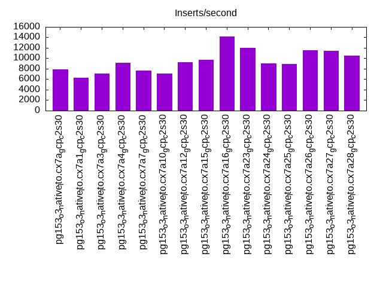

Introduction
This is a report for the insert benchmark with 4000M docs and 8 client(s). It is generated by scripts (bash, awk, sed) and Tufte might not be impressed. An overview of the insert benchmark is here and a short update is here. Below, by DBMS, I mean DBMS+version.config. An example is my8020.c10b40 where my means MySQL, 8020 is version 8.0.20 and c10b40 is the name for the configuration file.
The test server is a c2-standard-30 with 15 cores, hyperthreads disabled, 120G RAM and XFS with SW RAID 0 across 4 NVMe SSD. The benchmark was run with 8 clients and there were 1 or 3 connections per client (1 for queries or inserts without rate limits, 1+1 for rate limited inserts+deletes). It uses 8 tables, 1 per client. It loads 500M rows per table without secondary indexes, creates secondary indexes, then inserts 40M rows per table with a delete per insert to avoid growing the table. It then does 3 read+write tests for 3600s each that do queries as fast as possible with 100, 500 and then 1000 inserts/second/client concurrent with the queries. There are also deletes to match the inserts and avoid growing the table. The database is larger than RAM. Clients and the DBMS share one server. The per-database configs are in the per-database subdirectories here.
The tested DBMS are:
- pg153_o3_native_lto.cx7a_gcp_c2s30 - Postgres 15.3, o3_native_lto build, cx7a_gcp_c2s30 config, this is the base config
- pg153_o3_native_lto.cx7a1_gcp_c2s30 - Postgres 15.3, o3_native_lto build, cx7a1_gcp_c2s30 config that adds wal_compression=lz4
- pg153_o3_native_lto.cx7a3_gcp_c2s30 - Postgres 15.3, o3_native_lto build, cx7a3_gcp_c2s30 config that adds full_page_writes=off
- pg153_o3_native_lto.cx7a4_gcp_c2s30 - Postgres 15.3, o3_native_lto build, cx7a4_gcp_c2s30 config that adds checkpoint_timeout=1800s
- pg153_o3_native_lto.cx7a7_gcp_c2s30 - Postgres 15.3, o3_native_lto build, cx7a7_gcp_c2s30 config that adds max_wal_size=16GB
- pg153_o3_native_lto.cx7a10_gcp_c2s30 - Postgres 15.3, o3_native_lto build, cx7a10_gcp_c2s30 config that adds autovacuum_work_mem=256MB
- pg153_o3_native_lto.cx7a12_gcp_c2s30 - Postgres 15.3, o3_native_lto build, cx7a12_gcp_c2s30 config that adds wal_buffers=64MB
- pg153_o3_native_lto.cx7a15_gcp_c2s30 - Postgres 15.3, o3_native_lto build, cx7a15_gcp_c2s30 config that adds max_wal_size=32GB
- pg153_o3_native_lto.cx7a16_gcp_c2s30 - Postgres 15.3, o3_native_lto build, cx7a16_gcp_c2s30 config that adds autovacuum_vacuum_scale_factor=0.05 and autovacuum_vacuum_insert_scale_factor=0.05
- pg153_o3_native_lto.cx7a23_gcp_c2s30 - Postgres 15.3, o3_native_lto build, cx7a23_gcp_c2s30 config that adds autovacuum_max_workers=8, autovacuum_work_mem=256MB, autovacuum_vacuum_scale_factor=0.05 autovacuum_vacuum_insert_scale_factor=0.05
- pg153_o3_native_lto.cx7a24_gcp_c2s30 - Postgres 15.3, o3_native_lto build, cx7a24_gcp_c2s30 config that adds autovacuum_vacuum_cost_limit=4000
- pg153_o3_native_lto.cx7a25_gcp_c2s30 - Postgres 15.3, o3_native_lto build, cx7a25_gcp_c2s30 config that adds shared_buffers=30GB
- pg153_o3_native_lto.cx7a26_gcp_c2s30 - Postgres 15.3, o3_native_lto build, cx7a26_gcp_c2s30 config that adds autovacuum_max_workers=8, autovacuum_vacuum_scale_factor=0.05 autovacuum_vacuum_insert_scale_factor=0.05
- pg153_o3_native_lto.cx7a27_gcp_c2s30 - Postgres 15.3, o3_native_lto build, cx7a27_gcp_c2s30 config that combines a1, a4, a12, a16, a26 (better for cached workloads)
- pg153_o3_native_lto.cx7a28_gcp_c2s30 - Postgres 15.3, o3_native_lto build, cx7a28_gcp_c2s30 config that combines a4, a12, a15, a16, a24, a26 (better for IO-bound workloads)
Contents
- Summary
- l.i0: load without secondary indexes
- l.x: create secondary indexes
- l.i1: continue load after secondary indexes created
- q100.1: range queries with 100 insert/s per client
- q500.1: range queries with 500 insert/s per client
- q1000.1: range queries with 1000 insert/s per client
Summary
The numbers are inserts/s for l.i0 and l.i1, indexed docs (or rows) /s for l.x and queries/s for q*.2. The values are the average rate over the entire test for inserts (IPS) and queries (QPS). The range of values for IPS and QPS is split into 3 parts: bottom 25%, middle 50%, top 25%. Values in the bottom 25% have a red background, values in the top 25% have a green background and values in the middle have no color. A gray background is used for values that can be ignored because the DBMS did not sustain the target insert rate. Red backgrounds are not used when the minimum value is within 80% of the max value.
| dbms | l.i0 | l.x | l.i1 | q100.1 | q500.1 | q1000.1 |
|---|---|---|---|---|---|---|
| pg153_o3_native_lto.cx7a_gcp_c2s30 | 1088732 | 1549826 | 7923 | 107359 | 91038 | 79360 |
| pg153_o3_native_lto.cx7a1_gcp_c2s30 | 1083717 | 1680714 | 6277 | 105093 | 92606 | 86199 |
| pg153_o3_native_lto.cx7a3_gcp_c2s30 | 1088732 | 1503232 | 7078 | 107267 | 90185 | 79753 |
| pg153_o3_native_lto.cx7a4_gcp_c2s30 | 1082837 | 1484818 | 9102 | 108905 | 96611 | 81530 |
| pg153_o3_native_lto.cx7a7_gcp_c2s30 | 1091703 | 1525010 | 7707 | 107356 | 87354 | 85311 |
| pg153_o3_native_lto.cx7a10_gcp_c2s30 | 1079040 | 1514042 | 7117 | 106019 | 89978 | 79587 |
| pg153_o3_native_lto.cx7a12_gcp_c2s30 | 1101322 | 1512325 | 9206 | 106124 | 91038 | 84936 |
| pg153_o3_native_lto.cx7a15_gcp_c2s30 | 1107420 | 1361504 | 9692 | 111163 | 100752 | 96531 |
| pg153_o3_native_lto.cx7a16_gcp_c2s30 | 1079040 | 1500413 | 14189 | 102826 | 91354 | 72827 |
| pg153_o3_native_lto.cx7a23_gcp_c2s30 | 1084599 | 1512325 | 11981 | 104812 | 95138 | 85161 |
| pg153_o3_native_lto.cx7a24_gcp_c2s30 | 1067806 | 1510612 | 9049 | 107486 | 97981 | 89136 |
| pg153_o3_native_lto.cx7a25_gcp_c2s30 | 1072961 | 1745244 | 8967 | 108316 | 94608 | 69707 |
| pg153_o3_native_lto.cx7a26_gcp_c2s30 | 1086071 | 1501539 | 11559 | 104575 | 95321 | 92061 |
| pg153_o3_native_lto.cx7a27_gcp_c2s30 | 1110802 | 1624736 | 11426 | 104467 | 94699 | 74007 |
| pg153_o3_native_lto.cx7a28_gcp_c2s30 | 1114206 | 1498726 | 10488 | 102673 | 93484 | 72343 |
This table has relative throughput, throughput for the DBMS relative to the DBMS in the first line, using the absolute throughput from the previous table. Values less than 0.95 have a yellow background. Values greater than 1.05 have a blue background.
| dbms | l.i0 | l.x | l.i1 | q100.1 | q500.1 | q1000.1 |
|---|---|---|---|---|---|---|
| pg153_o3_native_lto.cx7a_gcp_c2s30 | 1.00 | 1.00 | 1.00 | 1.00 | 1.00 | 1.00 |
| pg153_o3_native_lto.cx7a1_gcp_c2s30 | 1.00 | 1.08 | 0.79 | 0.98 | 1.02 | 1.09 |
| pg153_o3_native_lto.cx7a3_gcp_c2s30 | 1.00 | 0.97 | 0.89 | 1.00 | 0.99 | 1.00 |
| pg153_o3_native_lto.cx7a4_gcp_c2s30 | 0.99 | 0.96 | 1.15 | 1.01 | 1.06 | 1.03 |
| pg153_o3_native_lto.cx7a7_gcp_c2s30 | 1.00 | 0.98 | 0.97 | 1.00 | 0.96 | 1.07 |
| pg153_o3_native_lto.cx7a10_gcp_c2s30 | 0.99 | 0.98 | 0.90 | 0.99 | 0.99 | 1.00 |
| pg153_o3_native_lto.cx7a12_gcp_c2s30 | 1.01 | 0.98 | 1.16 | 0.99 | 1.00 | 1.07 |
| pg153_o3_native_lto.cx7a15_gcp_c2s30 | 1.02 | 0.88 | 1.22 | 1.04 | 1.11 | 1.22 |
| pg153_o3_native_lto.cx7a16_gcp_c2s30 | 0.99 | 0.97 | 1.79 | 0.96 | 1.00 | 0.92 |
| pg153_o3_native_lto.cx7a23_gcp_c2s30 | 1.00 | 0.98 | 1.51 | 0.98 | 1.05 | 1.07 |
| pg153_o3_native_lto.cx7a24_gcp_c2s30 | 0.98 | 0.97 | 1.14 | 1.00 | 1.08 | 1.12 |
| pg153_o3_native_lto.cx7a25_gcp_c2s30 | 0.99 | 1.13 | 1.13 | 1.01 | 1.04 | 0.88 |
| pg153_o3_native_lto.cx7a26_gcp_c2s30 | 1.00 | 0.97 | 1.46 | 0.97 | 1.05 | 1.16 |
| pg153_o3_native_lto.cx7a27_gcp_c2s30 | 1.02 | 1.05 | 1.44 | 0.97 | 1.04 | 0.93 |
| pg153_o3_native_lto.cx7a28_gcp_c2s30 | 1.02 | 0.97 | 1.32 | 0.96 | 1.03 | 0.91 |
This lists the average rate of inserts/s for the tests that do inserts concurrent with queries. For such tests the query rate is listed in the table above. The read+write tests are setup so that the insert rate should match the target rate every second. Cells that are not at least 95% of the target have a red background to indicate a failure to satisfy the target.
| dbms | q100.1 | q500.1 | q1000.1 |
|---|---|---|---|
| pg153_o3_native_lto.cx7a_gcp_c2s30 | 797 | 3946 | 7962 |
| pg153_o3_native_lto.cx7a1_gcp_c2s30 | 798 | 3983 | 7976 |
| pg153_o3_native_lto.cx7a3_gcp_c2s30 | 797 | 3944 | 7923 |
| pg153_o3_native_lto.cx7a4_gcp_c2s30 | 797 | 3974 | 7976 |
| pg153_o3_native_lto.cx7a7_gcp_c2s30 | 798 | 3927 | 7943 |
| pg153_o3_native_lto.cx7a10_gcp_c2s30 | 797 | 3922 | 7914 |
| pg153_o3_native_lto.cx7a12_gcp_c2s30 | 797 | 3947 | 7976 |
| pg153_o3_native_lto.cx7a15_gcp_c2s30 | 797 | 3987 | 7965 |
| pg153_o3_native_lto.cx7a16_gcp_c2s30 | 797 | 3988 | 6818 |
| pg153_o3_native_lto.cx7a23_gcp_c2s30 | 797 | 3987 | 7756 |
| pg153_o3_native_lto.cx7a24_gcp_c2s30 | 797 | 3987 | 7976 |
| pg153_o3_native_lto.cx7a25_gcp_c2s30 | 797 | 3954 | 7969 |
| pg153_o3_native_lto.cx7a26_gcp_c2s30 | 797 | 3987 | 7157 |
| pg153_o3_native_lto.cx7a27_gcp_c2s30 | 798 | 3987 | 7811 |
| pg153_o3_native_lto.cx7a28_gcp_c2s30 | 798 | 3987 | 7717 |
| target | 800 | 4000 | 8000 |
l.i0
l.i0: load without secondary indexes. Graphs for performance per 1-second interval are here.
Average throughput:
Insert response time histogram: each cell has the percentage of responses that take <= the time in the header and max is the max response time in seconds. For the max column values in the top 25% of the range have a red background and in the bottom 25% of the range have a green background. The red background is not used when the min value is within 80% of the max value.
| dbms | 256us | 1ms | 4ms | 16ms | 64ms | 256ms | 1s | 4s | 16s | gt | max |
|---|---|---|---|---|---|---|---|---|---|---|---|
| pg153_o3_native_lto.cx7a_gcp_c2s30 | 96.851 | 3.079 | 0.039 | 0.012 | 0.018 | 0.001 | 0.444 | ||||
| pg153_o3_native_lto.cx7a1_gcp_c2s30 | 97.031 | 2.908 | 0.034 | 0.009 | 0.015 | 0.002 | 0.692 | ||||
| pg153_o3_native_lto.cx7a3_gcp_c2s30 | 97.628 | 2.311 | 0.031 | 0.012 | 0.017 | 0.001 | 0.616 | ||||
| pg153_o3_native_lto.cx7a4_gcp_c2s30 | 96.897 | 3.032 | 0.041 | 0.011 | 0.018 | 0.001 | nonzero | 1.097 | |||
| pg153_o3_native_lto.cx7a7_gcp_c2s30 | 96.769 | 3.155 | 0.043 | 0.020 | 0.013 | 0.001 | 0.528 | ||||
| pg153_o3_native_lto.cx7a10_gcp_c2s30 | 96.746 | 3.183 | 0.039 | 0.013 | 0.018 | 0.001 | 0.537 | ||||
| pg153_o3_native_lto.cx7a12_gcp_c2s30 | 96.976 | 2.970 | 0.037 | 0.008 | 0.008 | 0.001 | 0.750 | ||||
| pg153_o3_native_lto.cx7a15_gcp_c2s30 | 96.915 | 3.009 | 0.051 | 0.018 | 0.007 | nonzero | nonzero | nonzero | 5.092 | ||
| pg153_o3_native_lto.cx7a16_gcp_c2s30 | 97.359 | 2.576 | 0.033 | 0.015 | 0.017 | 0.001 | nonzero | 1.407 | |||
| pg153_o3_native_lto.cx7a23_gcp_c2s30 | 97.187 | 2.740 | 0.041 | 0.014 | 0.018 | 0.001 | 0.439 | ||||
| pg153_o3_native_lto.cx7a24_gcp_c2s30 | 97.108 | 2.819 | 0.041 | 0.013 | 0.018 | 0.001 | 0.401 | ||||
| pg153_o3_native_lto.cx7a25_gcp_c2s30 | 96.870 | 3.063 | 0.031 | 0.017 | 0.017 | 0.001 | 0.543 | ||||
| pg153_o3_native_lto.cx7a26_gcp_c2s30 | 97.367 | 2.573 | 0.030 | 0.010 | 0.018 | 0.001 | 0.439 | ||||
| pg153_o3_native_lto.cx7a27_gcp_c2s30 | 97.643 | 2.315 | 0.029 | 0.005 | 0.008 | 0.001 | 0.662 | ||||
| pg153_o3_native_lto.cx7a28_gcp_c2s30 | 97.447 | 2.508 | 0.029 | 0.009 | 0.007 | nonzero | 0.574 |
Performance metrics for the DBMS listed above. Some are normalized by throughput, others are not. Legend for results is here.
ips qps rps rmbps wps wmbps rpq rkbpq wpi wkbpi csps cpups cspq cpupq dbgb1 dbgb2 rss maxop p50 p99 tag 1088732 0 563 4.7 1553.8 297.4 0.001 0.004 0.001 0.280 90046 82.5 0.083 11 382.7 452.8 8.6 0.444 143093 51744 4000m.pg153_o3_native_lto.cx7a_gcp_c2s30 1083717 0 553 4.7 1507.2 273.1 0.001 0.004 0.001 0.258 89298 82.6 0.082 11 382.7 452.8 14.3 0.692 142845 42154 4000m.pg153_o3_native_lto.cx7a1_gcp_c2s30 1088732 0 558 5.4 1494.0 259.9 0.001 0.005 0.001 0.244 90672 83.1 0.083 11 382.7 452.8 7.3 0.616 142246 57737 4000m.pg153_o3_native_lto.cx7a3_gcp_c2s30 1082837 0 552 4.7 1589.5 294.5 0.001 0.004 0.001 0.278 89127 82.7 0.082 11 382.7 452.8 28.9 1.097 142445 49264 4000m.pg153_o3_native_lto.cx7a4_gcp_c2s30 1091703 0 553 5.0 1760.8 321.0 0.001 0.005 0.002 0.301 91245 83.5 0.084 11 382.7 398.8 10.0 0.528 142843 61333 4000m.pg153_o3_native_lto.cx7a7_gcp_c2s30 1079040 0 551 4.7 1599.0 297.5 0.001 0.004 0.001 0.282 88599 82.5 0.082 11 382.7 452.8 1.7 0.537 141943 54260 4000m.pg153_o3_native_lto.cx7a10_gcp_c2s30 1101322 0 556 4.6 1616.5 301.4 0.001 0.004 0.001 0.280 90598 84.1 0.082 11 382.7 452.8 14.0 0.750 142593 67826 4000m.pg153_o3_native_lto.cx7a12_gcp_c2s30 1107420 0 572 4.8 1623.8 313.0 0.001 0.004 0.001 0.289 90594 84.2 0.082 11 382.7 414.8 0.0 5.092 143441 59135 4000m.pg153_o3_native_lto.cx7a15_gcp_c2s30 1079040 0 530 4.2 1368.6 250.2 0.000 0.004 0.001 0.237 90608 82.6 0.084 11 382.7 452.8 4.9 1.407 141447 51045 4000m.pg153_o3_native_lto.cx7a16_gcp_c2s30 1084599 0 548 4.3 1364.7 254.6 0.001 0.004 0.001 0.240 90587 82.7 0.084 11 382.7 452.8 7.7 0.439 141946 54559 4000m.pg153_o3_native_lto.cx7a23_gcp_c2s30 1067806 0 555 4.5 1558.2 288.1 0.001 0.004 0.001 0.276 89197 82.6 0.084 12 382.7 452.8 4.6 0.401 140348 50764 4000m.pg153_o3_native_lto.cx7a24_gcp_c2s30 1072961 0 675 9.7 1582.7 304.0 0.001 0.009 0.001 0.290 90603 82.0 0.084 11 382.7 412.8 20.7 0.543 141148 50745 4000m.pg153_o3_native_lto.cx7a25_gcp_c2s30 1086071 0 543 4.3 1380.8 252.5 0.000 0.004 0.001 0.238 91405 82.5 0.084 11 382.7 452.8 9.5 0.439 142246 54840 4000m.pg153_o3_native_lto.cx7a26_gcp_c2s30 1110802 0 540 4.3 1385.9 253.5 0.000 0.004 0.001 0.234 92534 84.6 0.083 11 382.7 452.8 9.9 0.662 142424 81810 4000m.pg153_o3_native_lto.cx7a27_gcp_c2s30 1114206 0 545 4.3 1457.4 282.3 0.000 0.004 0.001 0.259 92740 84.7 0.083 11 382.7 414.8 3.3 0.574 143293 83210 4000m.pg153_o3_native_lto.cx7a28_gcp_c2s30
l.x
l.x: create secondary indexes.
Average throughput:
Performance metrics for the DBMS listed above. Some are normalized by throughput, others are not. Legend for results is here.
ips qps rps rmbps wps wmbps rpq rkbpq wpi wkbpi csps cpups cspq cpupq dbgb1 dbgb2 rss maxop p50 p99 tag 1549826 0 3679 758.7 1408.4 307.9 0.002 0.501 0.001 0.203 36674 34.3 0.024 3 735.2 798.7 48.9 0.002 NA NA 4000m.pg153_o3_native_lto.cx7a_gcp_c2s30 1680714 0 3402 747.4 1423.0 314.7 0.002 0.455 0.001 0.192 13105 37.5 0.008 3 735.2 805.2 53.5 0.017 NA NA 4000m.pg153_o3_native_lto.cx7a1_gcp_c2s30 1503232 0 3701 766.3 1316.2 289.7 0.002 0.522 0.001 0.197 36635 33.8 0.024 3 735.2 803.2 52.1 0.002 NA NA 4000m.pg153_o3_native_lto.cx7a3_gcp_c2s30 1484818 0 3606 752.1 1386.0 302.3 0.002 0.519 0.001 0.209 37729 34.1 0.025 3 735.2 805.2 48.3 0.029 NA NA 4000m.pg153_o3_native_lto.cx7a4_gcp_c2s30 1525010 0 3765 741.3 1358.8 295.9 0.002 0.498 0.001 0.199 37707 34.0 0.025 3 735.2 751.2 54.7 0.017 NA NA 4000m.pg153_o3_native_lto.cx7a7_gcp_c2s30 1514042 0 3706 763.7 1356.4 298.7 0.002 0.517 0.001 0.202 36901 34.0 0.024 3 735.2 803.5 51.4 0.002 NA NA 4000m.pg153_o3_native_lto.cx7a10_gcp_c2s30 1512325 0 3607 743.1 1432.8 310.0 0.002 0.503 0.001 0.210 35438 34.5 0.023 3 735.2 804.1 55.4 0.020 NA NA 4000m.pg153_o3_native_lto.cx7a12_gcp_c2s30 1361504 0 5617 743.0 1321.6 276.7 0.004 0.559 0.001 0.208 19150 32.1 0.014 4 735.2 766.7 0.1 0.002 NA NA 4000m.pg153_o3_native_lto.cx7a15_gcp_c2s30 1500413 0 3702 759.9 1287.7 287.2 0.002 0.519 0.001 0.196 36972 33.9 0.025 3 735.2 804.9 56.8 0.002 NA NA 4000m.pg153_o3_native_lto.cx7a16_gcp_c2s30 1512325 0 3628 751.8 1317.8 287.1 0.002 0.509 0.001 0.194 35933 34.5 0.024 3 735.2 802.6 56.9 0.003 NA NA 4000m.pg153_o3_native_lto.cx7a23_gcp_c2s30 1510612 0 3635 746.0 1410.6 310.9 0.002 0.506 0.001 0.211 36768 34.6 0.024 3 735.2 803.7 52.2 0.002 NA NA 4000m.pg153_o3_native_lto.cx7a24_gcp_c2s30 1745244 0 2406 578.4 1582.3 367.3 0.001 0.339 0.001 0.216 47861 36.9 0.027 3 735.2 765.2 12.9 0.017 NA NA 4000m.pg153_o3_native_lto.cx7a25_gcp_c2s30 1501539 0 3654 756.0 1289.0 283.7 0.002 0.516 0.001 0.193 37115 34.2 0.025 3 735.2 802.7 56.7 0.002 NA NA 4000m.pg153_o3_native_lto.cx7a26_gcp_c2s30 1624736 0 3555 768.1 1244.9 277.6 0.002 0.484 0.001 0.175 13241 37.1 0.008 3 735.2 804.7 56.7 0.002 NA NA 4000m.pg153_o3_native_lto.cx7a27_gcp_c2s30 1498726 0 3618 748.5 1278.2 282.0 0.002 0.511 0.001 0.193 36711 34.2 0.024 3 735.2 767.1 56.7 0.002 NA NA 4000m.pg153_o3_native_lto.cx7a28_gcp_c2s30
l.i1
l.i1: continue load after secondary indexes created. Graphs for performance per 1-second interval are here.
Average throughput:
Insert response time histogram: each cell has the percentage of responses that take <= the time in the header and max is the max response time in seconds. For the max column values in the top 25% of the range have a red background and in the bottom 25% of the range have a green background. The red background is not used when the min value is within 80% of the max value.
| dbms | 256us | 1ms | 4ms | 16ms | 64ms | 256ms | 1s | 4s | 16s | gt | max |
|---|---|---|---|---|---|---|---|---|---|---|---|
| pg153_o3_native_lto.cx7a_gcp_c2s30 | 35.330 | 42.736 | 21.923 | 0.010 | 0.001 | 0.658 | |||||
| pg153_o3_native_lto.cx7a1_gcp_c2s30 | 21.735 | 51.876 | 26.371 | 0.017 | 0.002 | 0.958 | |||||
| pg153_o3_native_lto.cx7a3_gcp_c2s30 | 48.226 | 40.236 | 11.532 | 0.006 | nonzero | 0.694 | |||||
| pg153_o3_native_lto.cx7a4_gcp_c2s30 | 39.523 | 42.709 | 17.748 | 0.016 | 0.002 | nonzero | 1.033 | ||||
| pg153_o3_native_lto.cx7a7_gcp_c2s30 | 42.228 | 32.904 | 24.859 | 0.008 | 0.001 | 0.690 | |||||
| pg153_o3_native_lto.cx7a10_gcp_c2s30 | 42.777 | 36.690 | 20.499 | 0.033 | 0.001 | 0.781 | |||||
| pg153_o3_native_lto.cx7a12_gcp_c2s30 | 19.701 | 53.436 | 26.849 | 0.011 | 0.003 | 0.848 | |||||
| pg153_o3_native_lto.cx7a15_gcp_c2s30 | 0.006 | 14.553 | 54.762 | 30.564 | 0.107 | 0.006 | nonzero | 0.001 | 5.370 | ||
| pg153_o3_native_lto.cx7a16_gcp_c2s30 | 33.184 | 45.504 | 21.278 | 0.032 | 0.002 | 0.907 | |||||
| pg153_o3_native_lto.cx7a23_gcp_c2s30 | 36.942 | 38.232 | 24.784 | 0.039 | 0.003 | 0.660 | |||||
| pg153_o3_native_lto.cx7a24_gcp_c2s30 | 36.274 | 42.619 | 21.070 | 0.033 | 0.003 | nonzero | 1.305 | ||||
| pg153_o3_native_lto.cx7a25_gcp_c2s30 | 42.913 | 28.725 | 28.317 | 0.041 | 0.004 | nonzero | 1.341 | ||||
| pg153_o3_native_lto.cx7a26_gcp_c2s30 | 31.455 | 41.941 | 26.583 | 0.019 | 0.002 | nonzero | 1.201 | ||||
| pg153_o3_native_lto.cx7a27_gcp_c2s30 | 47.402 | 33.854 | 18.734 | 0.010 | 0.001 | 0.771 | |||||
| pg153_o3_native_lto.cx7a28_gcp_c2s30 | 13.586 | 54.976 | 31.411 | 0.025 | 0.002 | 0.921 |
Delete response time histogram: each cell has the percentage of responses that take <= the time in the header and max is the max response time in seconds. For the max column values in the top 25% of the range have a red background and in the bottom 25% of the range have a green background. The red background is not used when the min value is within 80% of the max value.
| dbms | 256us | 1ms | 4ms | 16ms | 64ms | 256ms | 1s | 4s | 16s | gt | max |
|---|---|---|---|---|---|---|---|---|---|---|---|
| pg153_o3_native_lto.cx7a_gcp_c2s30 | 69.753 | 1.352 | 0.791 | 3.072 | 9.735 | 12.771 | 2.527 | 0.730 | |||
| pg153_o3_native_lto.cx7a1_gcp_c2s30 | 59.776 | 4.205 | 0.952 | 3.042 | 9.260 | 15.537 | 7.229 | 0.594 | |||
| pg153_o3_native_lto.cx7a3_gcp_c2s30 | 67.403 | 0.761 | 0.781 | 2.969 | 8.483 | 12.610 | 6.994 | 0.569 | |||
| pg153_o3_native_lto.cx7a4_gcp_c2s30 | 69.299 | 0.812 | 0.872 | 2.917 | 10.264 | 14.724 | 1.112 | 0.745 | |||
| pg153_o3_native_lto.cx7a7_gcp_c2s30 | 70.770 | 1.539 | 0.803 | 3.000 | 8.786 | 11.475 | 3.628 | 0.701 | |||
| pg153_o3_native_lto.cx7a10_gcp_c2s30 | 68.220 | 0.838 | 0.763 | 3.028 | 9.487 | 11.640 | 6.023 | 0.747 | |||
| pg153_o3_native_lto.cx7a12_gcp_c2s30 | 68.560 | 3.767 | 0.767 | 2.880 | 10.113 | 13.760 | 0.154 | nonzero | 1.651 | ||
| pg153_o3_native_lto.cx7a15_gcp_c2s30 | 68.844 | 2.831 | 1.308 | 4.718 | 14.381 | 7.917 | nonzero | nonzero | nonzero | 5.100 | |
| pg153_o3_native_lto.cx7a16_gcp_c2s30 | 69.068 | 2.240 | 0.763 | 2.862 | 13.827 | 11.240 | 0.001 | 0.475 | |||
| pg153_o3_native_lto.cx7a23_gcp_c2s30 | 70.427 | 3.261 | 0.744 | 2.849 | 8.801 | 13.916 | 0.001 | 0.545 | |||
| pg153_o3_native_lto.cx7a24_gcp_c2s30 | 67.122 | 1.636 | 1.046 | 3.845 | 8.699 | 15.595 | 2.057 | 0.643 | |||
| pg153_o3_native_lto.cx7a25_gcp_c2s30 | 69.371 | 1.625 | 0.896 | 3.583 | 11.002 | 13.195 | 0.329 | 0.673 | |||
| pg153_o3_native_lto.cx7a26_gcp_c2s30 | 70.895 | 3.782 | 0.757 | 2.755 | 9.236 | 12.574 | 0.002 | 0.594 | |||
| pg153_o3_native_lto.cx7a27_gcp_c2s30 | 67.971 | 1.769 | 1.193 | 3.606 | 12.284 | 13.163 | 0.015 | 0.408 | |||
| pg153_o3_native_lto.cx7a28_gcp_c2s30 | 61.001 | 6.219 | 1.915 | 6.381 | 14.400 | 10.082 | 0.002 | 0.952 |
Performance metrics for the DBMS listed above. Some are normalized by throughput, others are not. Legend for results is here.
ips qps rps rmbps wps wmbps rpq rkbpq wpi wkbpi csps cpups cspq cpupq dbgb1 dbgb2 rss maxop p50 p99 tag 7923 0 6939 65.0 9314.7 152.8 0.876 8.400 1.176 19.744 17808 37.6 2.248 712 791.0 824.9 68.9 0.658 250 200 4000m.pg153_o3_native_lto.cx7a_gcp_c2s30 6277 0 6064 60.9 8595.3 114.4 0.966 9.930 1.369 18.660 15183 37.8 2.419 903 784.0 792.3 49.2 0.958 500 350 4000m.pg153_o3_native_lto.cx7a1_gcp_c2s30 7078 0 5378 50.2 6800.9 70.1 0.760 7.257 0.961 10.135 13482 38.8 1.905 822 793.8 794.7 70.9 0.694 200 150 4000m.pg153_o3_native_lto.cx7a3_gcp_c2s30 9102 0 6762 64.3 9286.4 157.6 0.743 7.240 1.020 17.735 17961 38.5 1.973 635 785.2 850.4 5.4 1.033 250 200 4000m.pg153_o3_native_lto.cx7a4_gcp_c2s30 7707 0 6021 52.0 14427.0 209.8 0.781 6.913 1.872 27.870 15898 35.5 2.063 691 797.2 813.2 1.9 0.690 200 150 4000m.pg153_o3_native_lto.cx7a7_gcp_c2s30 7117 0 5488 47.7 7496.0 127.0 0.771 6.867 1.053 18.273 14544 39.5 2.044 833 794.7 811.4 70.2 0.781 300 250 4000m.pg153_o3_native_lto.cx7a10_gcp_c2s30 9206 0 9625 89.0 13158.9 201.4 1.045 9.895 1.429 22.400 23775 39.0 2.582 635 787.2 848.8 1.7 0.848 250 200 4000m.pg153_o3_native_lto.cx7a12_gcp_c2s30 9692 0 9892 99.1 17956.8 280.5 1.021 10.474 1.853 29.633 24989 26.5 2.578 410 780.7 808.6 0.1 5.370 2997 849 4000m.pg153_o3_native_lto.cx7a15_gcp_c2s30 14189 0 11675 132.2 17671.0 297.4 0.823 9.539 1.245 21.466 30552 38.9 2.153 411 774.4 837.9 70.8 0.907 1498 749 4000m.pg153_o3_native_lto.cx7a16_gcp_c2s30 11981 0 10192 102.8 13977.0 226.7 0.851 8.782 1.167 19.378 26430 37.9 2.206 474 778.5 821.6 70.6 0.660 300 250 4000m.pg153_o3_native_lto.cx7a23_gcp_c2s30 9049 0 7498 80.0 10937.4 184.9 0.829 9.050 1.209 20.927 19664 46.5 2.173 771 785.1 846.7 70.8 1.305 250 200 4000m.pg153_o3_native_lto.cx7a24_gcp_c2s30 8967 0 8777 96.6 15285.1 237.0 0.979 11.030 1.705 27.064 19203 35.5 2.142 594 783.8 813.9 30.6 1.341 1099 250 4000m.pg153_o3_native_lto.cx7a25_gcp_c2s30 11559 0 10626 118.8 15004.7 249.5 0.919 10.529 1.298 22.107 27194 41.0 2.353 532 772.7 842.8 68.1 1.201 300 200 4000m.pg153_o3_native_lto.cx7a26_gcp_c2s30 11426 0 7741 92.6 9964.0 143.6 0.677 8.297 0.872 12.869 20934 41.5 1.832 545 773.3 843.4 50.5 0.771 250 200 4000m.pg153_o3_native_lto.cx7a27_gcp_c2s30 10488 0 11439 129.5 20157.0 310.5 1.091 12.645 1.922 30.315 28728 37.2 2.739 532 773.1 805.1 47.1 0.921 250 200 4000m.pg153_o3_native_lto.cx7a28_gcp_c2s30
q100.1
q100.1: range queries with 100 insert/s per client. Graphs for performance per 1-second interval are here.
Average throughput:
Query response time histogram: each cell has the percentage of responses that take <= the time in the header and max is the max response time in seconds. For max values in the top 25% of the range have a red background and in the bottom 25% of the range have a green background. The red background is not used when the min value is within 80% of the max value.
| dbms | 256us | 1ms | 4ms | 16ms | 64ms | 256ms | 1s | 4s | 16s | gt | max |
|---|---|---|---|---|---|---|---|---|---|---|---|
| pg153_o3_native_lto.cx7a_gcp_c2s30 | 99.847 | 0.151 | 0.002 | nonzero | nonzero | nonzero | 0.145 | ||||
| pg153_o3_native_lto.cx7a1_gcp_c2s30 | 99.862 | 0.136 | 0.002 | nonzero | nonzero | nonzero | 0.144 | ||||
| pg153_o3_native_lto.cx7a3_gcp_c2s30 | 99.897 | 0.101 | 0.001 | nonzero | nonzero | nonzero | 0.137 | ||||
| pg153_o3_native_lto.cx7a4_gcp_c2s30 | 99.926 | 0.073 | nonzero | nonzero | nonzero | nonzero | 0.128 | ||||
| pg153_o3_native_lto.cx7a7_gcp_c2s30 | 99.930 | 0.070 | 0.001 | nonzero | nonzero | nonzero | 0.144 | ||||
| pg153_o3_native_lto.cx7a10_gcp_c2s30 | 99.913 | 0.086 | nonzero | nonzero | nonzero | nonzero | 0.121 | ||||
| pg153_o3_native_lto.cx7a12_gcp_c2s30 | 99.917 | 0.083 | nonzero | nonzero | nonzero | 0.041 | |||||
| pg153_o3_native_lto.cx7a15_gcp_c2s30 | 99.892 | 0.107 | 0.001 | nonzero | nonzero | nonzero | nonzero | 0.470 | |||
| pg153_o3_native_lto.cx7a16_gcp_c2s30 | 99.787 | 0.209 | 0.004 | nonzero | nonzero | nonzero | 0.096 | ||||
| pg153_o3_native_lto.cx7a23_gcp_c2s30 | 99.833 | 0.165 | 0.002 | nonzero | nonzero | nonzero | 0.071 | ||||
| pg153_o3_native_lto.cx7a24_gcp_c2s30 | 99.880 | 0.119 | 0.001 | nonzero | nonzero | nonzero | 0.139 | ||||
| pg153_o3_native_lto.cx7a25_gcp_c2s30 | 99.870 | 0.129 | 0.001 | nonzero | nonzero | nonzero | 0.211 | ||||
| pg153_o3_native_lto.cx7a26_gcp_c2s30 | 99.818 | 0.181 | 0.001 | nonzero | nonzero | nonzero | 0.163 | ||||
| pg153_o3_native_lto.cx7a27_gcp_c2s30 | 99.825 | 0.172 | 0.003 | nonzero | nonzero | nonzero | 0.113 | ||||
| pg153_o3_native_lto.cx7a28_gcp_c2s30 | 99.827 | 0.171 | 0.001 | nonzero | nonzero | 0.033 |
Insert response time histogram: each cell has the percentage of responses that take <= the time in the header and max is the max response time in seconds. For max values in the top 25% of the range have a red background and in the bottom 25% of the range have a green background. The red background is not used when the min value is within 80% of the max value.
| dbms | 256us | 1ms | 4ms | 16ms | 64ms | 256ms | 1s | 4s | 16s | gt | max |
|---|---|---|---|---|---|---|---|---|---|---|---|
| pg153_o3_native_lto.cx7a_gcp_c2s30 | 23.908 | 76.082 | 0.010 | 0.180 | |||||||
| pg153_o3_native_lto.cx7a1_gcp_c2s30 | 21.969 | 78.007 | 0.024 | 0.159 | |||||||
| pg153_o3_native_lto.cx7a3_gcp_c2s30 | 49.208 | 50.759 | 0.033 | 0.104 | |||||||
| pg153_o3_native_lto.cx7a4_gcp_c2s30 | 0.064 | 28.682 | 71.245 | 0.009 | 0.204 | ||||||
| pg153_o3_native_lto.cx7a7_gcp_c2s30 | 21.526 | 78.457 | 0.016 | 0.002 | 0.347 | ||||||
| pg153_o3_native_lto.cx7a10_gcp_c2s30 | 16.160 | 83.821 | 0.019 | 0.219 | |||||||
| pg153_o3_native_lto.cx7a12_gcp_c2s30 | 22.047 | 77.939 | 0.014 | 0.090 | |||||||
| pg153_o3_native_lto.cx7a15_gcp_c2s30 | 0.142 | 28.681 | 71.161 | 0.016 | 0.124 | ||||||
| pg153_o3_native_lto.cx7a16_gcp_c2s30 | 8.562 | 7.323 | 84.071 | 0.043 | 0.119 | ||||||
| pg153_o3_native_lto.cx7a23_gcp_c2s30 | 4.672 | 14.939 | 80.352 | 0.036 | 0.175 | ||||||
| pg153_o3_native_lto.cx7a24_gcp_c2s30 | 3.274 | 16.406 | 80.307 | 0.012 | 0.166 | ||||||
| pg153_o3_native_lto.cx7a25_gcp_c2s30 | 19.069 | 78.339 | 2.264 | 0.312 | 0.016 | 1.791 | |||||
| pg153_o3_native_lto.cx7a26_gcp_c2s30 | 12.458 | 5.406 | 82.127 | 0.009 | 0.093 | ||||||
| pg153_o3_native_lto.cx7a27_gcp_c2s30 | 10.556 | 7.234 | 82.188 | 0.023 | 0.104 | ||||||
| pg153_o3_native_lto.cx7a28_gcp_c2s30 | 35.142 | 64.856 | 0.002 | 0.074 |
Delete response time histogram: each cell has the percentage of responses that take <= the time in the header and max is the max response time in seconds. For max values in the top 25% of the range have a red background and in the bottom 25% of the range have a green background. The red background is not used when the min value is within 80% of the max value.
| dbms | 256us | 1ms | 4ms | 16ms | 64ms | 256ms | 1s | 4s | 16s | gt | max |
|---|---|---|---|---|---|---|---|---|---|---|---|
| pg153_o3_native_lto.cx7a_gcp_c2s30 | 64.759 | 26.547 | 8.686 | 0.009 | 0.004 | ||||||
| pg153_o3_native_lto.cx7a1_gcp_c2s30 | 44.719 | 37.762 | 17.450 | 0.069 | 0.008 | ||||||
| pg153_o3_native_lto.cx7a3_gcp_c2s30 | 36.682 | 32.483 | 30.637 | 0.198 | 0.008 | ||||||
| pg153_o3_native_lto.cx7a4_gcp_c2s30 | 73.472 | 26.292 | 0.229 | 0.005 | 0.002 | 0.024 | |||||
| pg153_o3_native_lto.cx7a7_gcp_c2s30 | 26.800 | 30.226 | 42.913 | 0.057 | 0.003 | 0.018 | |||||
| pg153_o3_native_lto.cx7a10_gcp_c2s30 | 50.510 | 31.781 | 17.573 | 0.135 | 0.015 | ||||||
| pg153_o3_native_lto.cx7a12_gcp_c2s30 | 67.042 | 32.733 | 0.222 | 0.003 | 0.015 | ||||||
| pg153_o3_native_lto.cx7a15_gcp_c2s30 | 60.688 | 19.764 | 19.356 | 0.193 | 0.015 | ||||||
| pg153_o3_native_lto.cx7a16_gcp_c2s30 | 25.707 | 22.674 | 26.014 | 0.606 | 24.998 | 0.002 | 0.078 | ||||
| pg153_o3_native_lto.cx7a23_gcp_c2s30 | 50.082 | 31.901 | 17.203 | 0.814 | 0.015 | ||||||
| pg153_o3_native_lto.cx7a24_gcp_c2s30 | 70.054 | 29.766 | 0.179 | 0.002 | 0.015 | ||||||
| pg153_o3_native_lto.cx7a25_gcp_c2s30 | 61.021 | 27.226 | 11.743 | 0.009 | 0.002 | 0.033 | |||||
| pg153_o3_native_lto.cx7a26_gcp_c2s30 | 58.780 | 28.512 | 0.207 | 11.967 | 0.535 | 0.035 | |||||
| pg153_o3_native_lto.cx7a27_gcp_c2s30 | 41.215 | 40.707 | 17.161 | 0.915 | 0.002 | 0.017 | |||||
| pg153_o3_native_lto.cx7a28_gcp_c2s30 | 22.403 | 25.446 | 25.656 | 13.708 | 12.785 | 0.002 | 0.077 |
Performance metrics for the DBMS listed above. Some are normalized by throughput, others are not. Legend for results is here.
ips qps rps rmbps wps wmbps rpq rkbpq wpi wkbpi csps cpups cspq cpupq dbgb1 dbgb2 rss maxop p50 p99 tag 797 107359 1542 13.0 2558.5 34.0 0.014 0.124 3.209 43.717 412436 53.0 3.842 74 791.1 824.7 70.9 0.145 13489 4827 4000m.pg153_o3_native_lto.cx7a_gcp_c2s30 798 105093 1498 12.9 2856.1 36.8 0.014 0.126 3.581 47.306 403484 53.2 3.839 76 784.1 822.6 70.9 0.144 13154 9573 4000m.pg153_o3_native_lto.cx7a1_gcp_c2s30 797 107267 1498 12.9 2613.3 31.2 0.014 0.123 3.278 40.034 411201 53.0 3.833 74 793.9 796.2 71.0 0.137 13345 13015 4000m.pg153_o3_native_lto.cx7a3_gcp_c2s30 797 108905 1422 11.9 1012.7 18.0 0.013 0.112 1.270 23.058 417476 53.1 3.833 73 785.4 855.5 70.9 0.128 13649 10964 4000m.pg153_o3_native_lto.cx7a4_gcp_c2s30 798 107356 1456 12.2 2622.0 36.2 0.014 0.116 3.288 46.417 412130 53.2 3.839 74 797.3 810.0 70.8 0.144 13335 13122 4000m.pg153_o3_native_lto.cx7a7_gcp_c2s30 797 106019 1439 12.0 2577.1 34.8 0.014 0.116 3.232 44.722 407168 53.1 3.841 75 794.8 827.4 70.9 0.121 13281 10329 4000m.pg153_o3_native_lto.cx7a10_gcp_c2s30 797 106124 1411 11.8 2535.2 39.8 0.013 0.114 3.180 51.086 407556 53.2 3.840 75 787.4 818.4 70.9 0.041 13249 10521 4000m.pg153_o3_native_lto.cx7a12_gcp_c2s30 797 111163 1560 14.4 2578.9 33.4 0.014 0.133 3.234 42.870 426902 53.0 3.840 72 780.8 800.8 0.0 0.470 14038 11939 4000m.pg153_o3_native_lto.cx7a15_gcp_c2s30 797 102826 1658 14.3 2931.5 40.1 0.016 0.143 3.677 51.494 395425 53.8 3.846 78 774.5 807.0 70.9 0.096 13154 4827 4000m.pg153_o3_native_lto.cx7a16_gcp_c2s30 797 104812 1567 13.5 2607.7 42.0 0.015 0.132 3.271 53.976 402831 53.0 3.843 76 778.5 809.8 70.9 0.071 13138 12610 4000m.pg153_o3_native_lto.cx7a23_gcp_c2s30 797 107486 1516 13.0 2555.9 33.6 0.014 0.124 3.206 43.145 413016 53.1 3.843 74 785.2 818.2 70.9 0.139 13585 12007 4000m.pg153_o3_native_lto.cx7a24_gcp_c2s30 797 108316 1677 14.7 2627.4 145.1 0.015 0.139 3.295 186.395 416281 53.0 3.843 73 784.0 802.3 30.4 0.211 13655 8822 4000m.pg153_o3_native_lto.cx7a25_gcp_c2s30 797 104575 1652 14.2 2594.0 34.9 0.016 0.139 3.254 44.775 402169 53.1 3.846 76 772.8 808.3 70.9 0.163 13169 12423 4000m.pg153_o3_native_lto.cx7a26_gcp_c2s30 798 104467 1599 13.9 1719.1 24.2 0.015 0.136 2.156 31.133 400895 52.9 3.838 76 773.4 843.4 71.0 0.113 13074 6936 4000m.pg153_o3_native_lto.cx7a27_gcp_c2s30 798 102673 1559 13.3 1638.1 25.0 0.015 0.132 2.054 32.077 394194 53.5 3.839 78 773.1 805.2 70.9 0.033 12898 9497 4000m.pg153_o3_native_lto.cx7a28_gcp_c2s30
q500.1
q500.1: range queries with 500 insert/s per client. Graphs for performance per 1-second interval are here.
Average throughput:

Query response time histogram: each cell has the percentage of responses that take <= the time in the header and max is the max response time in seconds. For max values in the top 25% of the range have a red background and in the bottom 25% of the range have a green background. The red background is not used when the min value is within 80% of the max value.
| dbms | 256us | 1ms | 4ms | 16ms | 64ms | 256ms | 1s | 4s | 16s | gt | max |
|---|---|---|---|---|---|---|---|---|---|---|---|
| pg153_o3_native_lto.cx7a_gcp_c2s30 | 99.948 | 0.050 | 0.002 | nonzero | nonzero | nonzero | nonzero | 0.652 | |||
| pg153_o3_native_lto.cx7a1_gcp_c2s30 | 99.947 | 0.052 | 0.001 | nonzero | nonzero | nonzero | nonzero | 0.281 | |||
| pg153_o3_native_lto.cx7a3_gcp_c2s30 | 99.960 | 0.039 | 0.001 | nonzero | nonzero | nonzero | 0.151 | ||||
| pg153_o3_native_lto.cx7a4_gcp_c2s30 | 99.948 | 0.050 | 0.002 | nonzero | nonzero | 0.050 | |||||
| pg153_o3_native_lto.cx7a7_gcp_c2s30 | 99.946 | 0.052 | 0.002 | nonzero | nonzero | nonzero | 0.222 | ||||
| pg153_o3_native_lto.cx7a10_gcp_c2s30 | 99.943 | 0.055 | 0.002 | nonzero | nonzero | nonzero | nonzero | 0.365 | |||
| pg153_o3_native_lto.cx7a12_gcp_c2s30 | 99.954 | 0.045 | 0.001 | nonzero | nonzero | nonzero | 0.159 | ||||
| pg153_o3_native_lto.cx7a15_gcp_c2s30 | 99.901 | 0.096 | 0.002 | nonzero | nonzero | 0.027 | |||||
| pg153_o3_native_lto.cx7a16_gcp_c2s30 | 99.827 | 0.169 | 0.004 | 0.001 | nonzero | 0.019 | |||||
| pg153_o3_native_lto.cx7a23_gcp_c2s30 | 99.855 | 0.141 | 0.003 | 0.001 | nonzero | 0.025 | |||||
| pg153_o3_native_lto.cx7a24_gcp_c2s30 | 99.939 | 0.059 | 0.001 | nonzero | nonzero | 0.030 | |||||
| pg153_o3_native_lto.cx7a25_gcp_c2s30 | 99.897 | 0.100 | 0.003 | 0.001 | nonzero | nonzero | nonzero | 0.311 | |||
| pg153_o3_native_lto.cx7a26_gcp_c2s30 | 99.818 | 0.179 | 0.003 | 0.001 | nonzero | 0.022 | |||||
| pg153_o3_native_lto.cx7a27_gcp_c2s30 | 99.875 | 0.121 | 0.003 | nonzero | nonzero | 0.023 | |||||
| pg153_o3_native_lto.cx7a28_gcp_c2s30 | 99.846 | 0.151 | 0.002 | 0.001 | nonzero | 0.028 |
Insert response time histogram: each cell has the percentage of responses that take <= the time in the header and max is the max response time in seconds. For max values in the top 25% of the range have a red background and in the bottom 25% of the range have a green background. The red background is not used when the min value is within 80% of the max value.
| dbms | 256us | 1ms | 4ms | 16ms | 64ms | 256ms | 1s | 4s | 16s | gt | max |
|---|---|---|---|---|---|---|---|---|---|---|---|
| pg153_o3_native_lto.cx7a_gcp_c2s30 | 52.867 | 46.432 | 0.453 | 0.225 | 0.023 | 2.488 | |||||
| pg153_o3_native_lto.cx7a1_gcp_c2s30 | 12.484 | 86.969 | 0.515 | 0.030 | 0.003 | 1.547 | |||||
| pg153_o3_native_lto.cx7a3_gcp_c2s30 | 72.549 | 26.751 | 0.343 | 0.357 | 0.906 | ||||||
| pg153_o3_native_lto.cx7a4_gcp_c2s30 | 44.066 | 55.166 | 0.687 | 0.081 | 0.571 | ||||||
| pg153_o3_native_lto.cx7a7_gcp_c2s30 | 50.222 | 49.065 | 0.267 | 0.444 | 0.002 | 1.891 | |||||
| pg153_o3_native_lto.cx7a10_gcp_c2s30 | 38.024 | 61.457 | 0.169 | 0.316 | 0.035 | nonzero | 4.226 | ||||
| pg153_o3_native_lto.cx7a12_gcp_c2s30 | 52.324 | 46.945 | 0.427 | 0.304 | 0.776 | ||||||
| pg153_o3_native_lto.cx7a15_gcp_c2s30 | 16.217 | 83.774 | 0.009 | 0.109 | |||||||
| pg153_o3_native_lto.cx7a16_gcp_c2s30 | 0.001 | 16.512 | 83.487 | 0.059 | |||||||
| pg153_o3_native_lto.cx7a23_gcp_c2s30 | 9.262 | 90.738 | 0.055 | ||||||||
| pg153_o3_native_lto.cx7a24_gcp_c2s30 | 19.630 | 80.321 | 0.049 | 0.205 | |||||||
| pg153_o3_native_lto.cx7a25_gcp_c2s30 | 12.176 | 83.490 | 4.039 | 0.290 | 0.006 | 1.580 | |||||
| pg153_o3_native_lto.cx7a26_gcp_c2s30 | 0.363 | 9.314 | 90.323 | 0.061 | |||||||
| pg153_o3_native_lto.cx7a27_gcp_c2s30 | 0.048 | 8.838 | 91.114 | 0.050 | |||||||
| pg153_o3_native_lto.cx7a28_gcp_c2s30 | 8.934 | 91.060 | 0.006 | 0.102 |
Delete response time histogram: each cell has the percentage of responses that take <= the time in the header and max is the max response time in seconds. For max values in the top 25% of the range have a red background and in the bottom 25% of the range have a green background. The red background is not used when the min value is within 80% of the max value.
| dbms | 256us | 1ms | 4ms | 16ms | 64ms | 256ms | 1s | 4s | 16s | gt | max |
|---|---|---|---|---|---|---|---|---|---|---|---|
| pg153_o3_native_lto.cx7a_gcp_c2s30 | 65.264 | 4.849 | 3.849 | 19.707 | 6.330 | 0.001 | nonzero | 0.339 | |||
| pg153_o3_native_lto.cx7a1_gcp_c2s30 | 86.178 | 8.030 | 4.109 | 1.680 | 0.002 | 0.024 | |||||
| pg153_o3_native_lto.cx7a3_gcp_c2s30 | 65.361 | 5.240 | 5.536 | 19.147 | 4.717 | 0.055 | |||||
| pg153_o3_native_lto.cx7a4_gcp_c2s30 | 93.877 | 5.405 | 0.126 | 0.045 | 0.548 | 0.024 | |||||
| pg153_o3_native_lto.cx7a7_gcp_c2s30 | 34.673 | 2.781 | 11.082 | 41.534 | 9.930 | 0.001 | 0.109 | ||||
| pg153_o3_native_lto.cx7a10_gcp_c2s30 | 65.122 | 6.106 | 4.149 | 18.862 | 5.760 | 0.001 | 0.001 | 0.880 | |||
| pg153_o3_native_lto.cx7a12_gcp_c2s30 | 91.372 | 8.485 | 0.124 | 0.014 | 0.005 | nonzero | 0.117 | ||||
| pg153_o3_native_lto.cx7a15_gcp_c2s30 | 67.353 | 6.200 | 3.704 | 22.708 | 0.035 | 0.032 | |||||
| pg153_o3_native_lto.cx7a16_gcp_c2s30 | 35.706 | 6.060 | 3.769 | 20.593 | 33.865 | 0.008 | 0.089 | ||||
| pg153_o3_native_lto.cx7a23_gcp_c2s30 | 59.089 | 9.270 | 2.722 | 15.510 | 13.408 | 0.038 | |||||
| pg153_o3_native_lto.cx7a24_gcp_c2s30 | 93.939 | 5.877 | 0.170 | 0.015 | 0.015 | ||||||
| pg153_o3_native_lto.cx7a25_gcp_c2s30 | 73.566 | 5.819 | 1.886 | 11.417 | 7.310 | 0.002 | nonzero | 0.259 | |||
| pg153_o3_native_lto.cx7a26_gcp_c2s30 | 67.470 | 8.392 | 0.164 | 4.050 | 19.924 | 0.046 | |||||
| pg153_o3_native_lto.cx7a27_gcp_c2s30 | 64.860 | 9.978 | 2.840 | 14.073 | 8.248 | 0.032 | |||||
| pg153_o3_native_lto.cx7a28_gcp_c2s30 | 56.588 | 9.913 | 2.668 | 21.186 | 9.644 | nonzero | 0.085 |
Performance metrics for the DBMS listed above. Some are normalized by throughput, others are not. Legend for results is here.
ips qps rps rmbps wps wmbps rpq rkbpq wpi wkbpi csps cpups cspq cpupq dbgb1 dbgb2 rss maxop p50 p99 tag 3946 91038 5931 92.1 8824.3 121.4 0.065 1.036 2.236 31.514 358473 57.7 3.938 95 791.2 831.4 1.5 0.652 11444 10053 4000m.pg153_o3_native_lto.cx7a_gcp_c2s30 3983 92606 5926 75.5 8810.1 106.7 0.064 0.835 2.212 27.418 364655 56.9 3.938 92 784.6 811.3 7.5 0.281 11523 10185 4000m.pg153_o3_native_lto.cx7a1_gcp_c2s30 3944 90185 5954 102.1 8506.9 80.7 0.066 1.160 2.157 20.944 355032 57.2 3.937 95 793.9 795.1 4.4 0.151 11396 9977 4000m.pg153_o3_native_lto.cx7a3_gcp_c2s30 3974 96611 5933 83.9 8096.2 107.1 0.061 0.890 2.038 27.604 379543 56.1 3.929 87 785.9 856.0 7.0 0.050 12087 9925 4000m.pg153_o3_native_lto.cx7a4_gcp_c2s30 3927 87354 5932 107.0 11551.9 139.3 0.068 1.255 2.942 36.322 345143 59.3 3.951 102 797.3 813.4 3.0 0.222 10932 9973 4000m.pg153_o3_native_lto.cx7a7_gcp_c2s30 3922 89978 5920 102.3 8709.5 119.2 0.066 1.164 2.221 31.129 354684 57.6 3.942 96 795.0 834.6 2.6 0.365 11368 9877 4000m.pg153_o3_native_lto.cx7a10_gcp_c2s30 3947 91038 5894 95.4 8712.2 121.8 0.065 1.073 2.207 31.592 360400 56.4 3.959 93 787.7 828.4 2.5 0.159 11412 9845 4000m.pg153_o3_native_lto.cx7a12_gcp_c2s30 3987 100752 5897 59.8 9747.0 130.5 0.059 0.608 2.445 33.509 393869 56.8 3.909 85 781.5 813.5 0.1 0.027 12674 11955 4000m.pg153_o3_native_lto.cx7a15_gcp_c2s30 3988 91354 5868 47.9 9019.0 122.6 0.064 0.537 2.262 31.474 340252 61.8 3.725 101 774.7 816.7 70.9 0.019 11491 10101 4000m.pg153_o3_native_lto.cx7a16_gcp_c2s30 3987 95138 5863 48.0 8972.3 122.8 0.062 0.517 2.251 31.545 368190 57.7 3.870 91 778.6 820.4 70.9 0.025 11699 11012 4000m.pg153_o3_native_lto.cx7a23_gcp_c2s30 3987 97981 5890 65.5 8870.0 122.7 0.060 0.685 2.225 31.525 385786 55.9 3.937 86 785.6 826.5 1.5 0.030 12323 11587 4000m.pg153_o3_native_lto.cx7a24_gcp_c2s30 3954 94608 6298 77.4 11216.2 470.6 0.067 0.838 2.837 121.888 371078 57.2 3.922 91 784.5 814.5 0.8 0.311 11875 10293 4000m.pg153_o3_native_lto.cx7a25_gcp_c2s30 3987 95321 5865 47.9 9006.5 123.7 0.062 0.515 2.259 31.769 367712 58.0 3.858 91 773.1 814.9 70.9 0.022 11667 11204 4000m.pg153_o3_native_lto.cx7a26_gcp_c2s30 3987 94699 5886 49.1 7390.2 85.9 0.062 0.530 1.854 22.066 367285 57.4 3.878 91 773.6 843.7 71.0 0.023 11833 11395 4000m.pg153_o3_native_lto.cx7a27_gcp_c2s30 3987 93484 5885 47.7 10231.0 135.6 0.063 0.522 2.566 34.825 363973 57.6 3.893 92 773.4 805.5 70.9 0.028 11491 10979 4000m.pg153_o3_native_lto.cx7a28_gcp_c2s30
q1000.1
q1000.1: range queries with 1000 insert/s per client. Graphs for performance per 1-second interval are here.
Average throughput:
Query response time histogram: each cell has the percentage of responses that take <= the time in the header and max is the max response time in seconds. For max values in the top 25% of the range have a red background and in the bottom 25% of the range have a green background. The red background is not used when the min value is within 80% of the max value.
| dbms | 256us | 1ms | 4ms | 16ms | 64ms | 256ms | 1s | 4s | 16s | gt | max |
|---|---|---|---|---|---|---|---|---|---|---|---|
| pg153_o3_native_lto.cx7a_gcp_c2s30 | 99.675 | 0.314 | 0.008 | 0.003 | nonzero | nonzero | 0.127 | ||||
| pg153_o3_native_lto.cx7a1_gcp_c2s30 | 99.751 | 0.244 | 0.004 | 0.001 | nonzero | nonzero | 0.075 | ||||
| pg153_o3_native_lto.cx7a3_gcp_c2s30 | 99.748 | 0.244 | 0.006 | 0.002 | nonzero | 0.047 | |||||
| pg153_o3_native_lto.cx7a4_gcp_c2s30 | 99.674 | 0.319 | 0.006 | 0.002 | nonzero | nonzero | 0.069 | ||||
| pg153_o3_native_lto.cx7a7_gcp_c2s30 | 99.738 | 0.257 | 0.004 | 0.001 | nonzero | 0.052 | |||||
| pg153_o3_native_lto.cx7a10_gcp_c2s30 | 99.677 | 0.316 | 0.006 | 0.002 | nonzero | 0.028 | |||||
| pg153_o3_native_lto.cx7a12_gcp_c2s30 | 99.710 | 0.286 | 0.004 | 0.001 | nonzero | 0.038 | |||||
| pg153_o3_native_lto.cx7a15_gcp_c2s30 | 99.731 | 0.262 | 0.005 | 0.001 | nonzero | nonzero | nonzero | 4.484 | |||
| pg153_o3_native_lto.cx7a16_gcp_c2s30 | 99.671 | 0.317 | 0.009 | 0.003 | nonzero | nonzero | 0.086 | ||||
| pg153_o3_native_lto.cx7a23_gcp_c2s30 | 99.637 | 0.351 | 0.009 | 0.003 | nonzero | 0.028 | |||||
| pg153_o3_native_lto.cx7a24_gcp_c2s30 | 99.779 | 0.218 | 0.003 | 0.001 | nonzero | 0.040 | |||||
| pg153_o3_native_lto.cx7a25_gcp_c2s30 | 98.273 | 1.600 | 0.085 | 0.030 | 0.012 | nonzero | nonzero | 0.621 | |||
| pg153_o3_native_lto.cx7a26_gcp_c2s30 | 99.743 | 0.243 | 0.010 | 0.003 | nonzero | 0.036 | |||||
| pg153_o3_native_lto.cx7a27_gcp_c2s30 | 99.549 | 0.438 | 0.010 | 0.003 | nonzero | 0.027 | |||||
| pg153_o3_native_lto.cx7a28_gcp_c2s30 | 99.545 | 0.448 | 0.006 | 0.001 | nonzero | nonzero | 0.101 |
Insert response time histogram: each cell has the percentage of responses that take <= the time in the header and max is the max response time in seconds. For max values in the top 25% of the range have a red background and in the bottom 25% of the range have a green background. The red background is not used when the min value is within 80% of the max value.
| dbms | 256us | 1ms | 4ms | 16ms | 64ms | 256ms | 1s | 4s | 16s | gt | max |
|---|---|---|---|---|---|---|---|---|---|---|---|
| pg153_o3_native_lto.cx7a_gcp_c2s30 | 23.974 | 76.000 | 0.026 | 0.152 | |||||||
| pg153_o3_native_lto.cx7a1_gcp_c2s30 | 3.453 | 96.529 | 0.018 | 0.102 | |||||||
| pg153_o3_native_lto.cx7a3_gcp_c2s30 | 59.389 | 40.603 | 0.008 | 0.134 | |||||||
| pg153_o3_native_lto.cx7a4_gcp_c2s30 | 17.752 | 82.233 | 0.015 | 0.112 | |||||||
| pg153_o3_native_lto.cx7a7_gcp_c2s30 | 25.769 | 74.226 | 0.004 | 0.093 | |||||||
| pg153_o3_native_lto.cx7a10_gcp_c2s30 | 13.606 | 86.392 | 0.002 | 0.113 | |||||||
| pg153_o3_native_lto.cx7a12_gcp_c2s30 | 6.298 | 93.692 | 0.010 | 0.140 | |||||||
| pg153_o3_native_lto.cx7a15_gcp_c2s30 | 18.663 | 81.328 | 0.006 | 0.002 | 0.001 | 4.516 | |||||
| pg153_o3_native_lto.cx7a16_gcp_c2s30 | 23.860 | 76.052 | 0.088 | 0.216 | |||||||
| pg153_o3_native_lto.cx7a23_gcp_c2s30 | 21.080 | 78.918 | 0.001 | 0.116 | |||||||
| pg153_o3_native_lto.cx7a24_gcp_c2s30 | 6.611 | 93.385 | 0.003 | 0.100 | |||||||
| pg153_o3_native_lto.cx7a25_gcp_c2s30 | 8.247 | 86.448 | 5.275 | 0.030 | 0.632 | ||||||
| pg153_o3_native_lto.cx7a26_gcp_c2s30 | 34.281 | 65.717 | 0.002 | 0.106 | |||||||
| pg153_o3_native_lto.cx7a27_gcp_c2s30 | 9.466 | 90.464 | 0.069 | 0.245 | |||||||
| pg153_o3_native_lto.cx7a28_gcp_c2s30 | 16.902 | 82.937 | 0.161 | 0.001 | 0.287 |
Delete response time histogram: each cell has the percentage of responses that take <= the time in the header and max is the max response time in seconds. For max values in the top 25% of the range have a red background and in the bottom 25% of the range have a green background. The red background is not used when the min value is within 80% of the max value.
| dbms | 256us | 1ms | 4ms | 16ms | 64ms | 256ms | 1s | 4s | 16s | gt | max |
|---|---|---|---|---|---|---|---|---|---|---|---|
| pg153_o3_native_lto.cx7a_gcp_c2s30 | 62.573 | 12.717 | 0.136 | 0.029 | 24.537 | 0.008 | 0.165 | ||||
| pg153_o3_native_lto.cx7a1_gcp_c2s30 | 75.465 | 24.329 | 0.173 | 0.031 | 0.002 | 0.038 | |||||
| pg153_o3_native_lto.cx7a3_gcp_c2s30 | 66.601 | 12.047 | 0.103 | 0.022 | 21.225 | 0.001 | 0.077 | ||||
| pg153_o3_native_lto.cx7a4_gcp_c2s30 | 68.631 | 12.572 | 0.160 | 0.081 | 18.544 | 0.012 | 0.099 | ||||
| pg153_o3_native_lto.cx7a7_gcp_c2s30 | 54.763 | 12.595 | 0.137 | 0.026 | 32.476 | 0.002 | 0.087 | ||||
| pg153_o3_native_lto.cx7a10_gcp_c2s30 | 69.071 | 17.579 | 0.139 | 0.037 | 13.171 | 0.003 | 0.077 | ||||
| pg153_o3_native_lto.cx7a12_gcp_c2s30 | 75.847 | 20.687 | 0.171 | 0.030 | 3.265 | 0.001 | 0.091 | ||||
| pg153_o3_native_lto.cx7a15_gcp_c2s30 | 37.620 | 8.451 | 0.095 | 4.751 | 49.077 | 0.004 | 0.001 | 0.001 | 4.501 | ||
| pg153_o3_native_lto.cx7a16_gcp_c2s30 | 48.072 | 15.232 | 1.422 | 3.718 | 27.922 | 3.636 | 0.130 | ||||
| pg153_o3_native_lto.cx7a23_gcp_c2s30 | 43.168 | 16.414 | 0.161 | 0.039 | 40.100 | 0.118 | 0.095 | ||||
| pg153_o3_native_lto.cx7a24_gcp_c2s30 | 83.380 | 16.447 | 0.148 | 0.024 | 0.001 | 0.022 | |||||
| pg153_o3_native_lto.cx7a25_gcp_c2s30 | 47.929 | 16.974 | 0.094 | 0.024 | 34.966 | 0.011 | 0.002 | 0.639 | |||
| pg153_o3_native_lto.cx7a26_gcp_c2s30 | 27.931 | 15.956 | 0.196 | 0.033 | 52.431 | 3.454 | 0.119 | ||||
| pg153_o3_native_lto.cx7a27_gcp_c2s30 | 50.485 | 23.502 | 0.150 | 0.029 | 25.832 | 0.002 | 0.086 | ||||
| pg153_o3_native_lto.cx7a28_gcp_c2s30 | 55.252 | 21.460 | 0.144 | 0.025 | 23.092 | 0.028 | 0.089 |
Performance metrics for the DBMS listed above. Some are normalized by throughput, others are not. Legend for results is here.
ips qps rps rmbps wps wmbps rpq rkbpq wpi wkbpi csps cpups cspq cpupq dbgb1 dbgb2 rss maxop p50 p99 tag 7962 79360 11811 96.7 16375.5 217.8 0.149 1.247 2.057 28.004 304068 65.9 3.832 125 791.2 861.2 70.9 0.127 9753 9126 4000m.pg153_o3_native_lto.cx7a_gcp_c2s30 7976 86199 11809 97.4 16169.9 206.0 0.137 1.157 2.027 26.455 346940 59.9 4.025 104 785.5 832.9 70.9 0.075 10868 10121 4000m.pg153_o3_native_lto.cx7a1_gcp_c2s30 7923 79753 11730 100.1 15932.1 141.6 0.147 1.285 2.011 18.295 310750 64.4 3.896 121 794.1 796.2 71.0 0.047 9897 9305 4000m.pg153_o3_native_lto.cx7a3_gcp_c2s30 7976 81530 11821 96.7 16552.1 216.9 0.145 1.215 2.075 27.846 317380 64.6 3.893 119 786.9 856.9 70.9 0.069 10165 9337 4000m.pg153_o3_native_lto.cx7a4_gcp_c2s30 7943 85311 11745 95.9 23805.8 283.1 0.138 1.151 2.997 36.498 297852 68.9 3.491 121 797.3 813.4 70.8 0.052 10665 9065 4000m.pg153_o3_native_lto.cx7a7_gcp_c2s30 7914 79587 11726 95.9 16250.3 217.5 0.147 1.234 2.053 28.141 318077 63.0 3.997 119 795.2 865.3 70.9 0.028 9989 9366 4000m.pg153_o3_native_lto.cx7a10_gcp_c2s30 7976 84936 11801 96.6 16364.3 244.5 0.139 1.164 2.052 31.391 342921 60.5 4.037 107 788.3 858.3 70.9 0.038 10852 9494 4000m.pg153_o3_native_lto.cx7a12_gcp_c2s30 7965 96531 11789 95.6 20337.8 259.0 0.122 1.014 2.554 33.301 313719 70.4 3.250 109 782.6 814.7 0.0 4.484 12131 10441 4000m.pg153_o3_native_lto.cx7a15_gcp_c2s30 6818 72827 10137 91.7 15292.8 205.1 0.139 1.290 2.243 30.799 245478 62.3 3.371 128 775.3 845.4 41.3 0.086 10436 8982 4000m.pg153_o3_native_lto.cx7a16_gcp_c2s30 7756 85161 11532 94.6 16526.2 220.5 0.135 1.138 2.131 29.113 269549 71.5 3.165 126 779.0 849.0 70.9 0.028 10756 9481 4000m.pg153_o3_native_lto.cx7a23_gcp_c2s30 7976 89136 11782 96.4 16470.4 232.6 0.132 1.107 2.065 29.866 361442 59.1 4.055 99 786.4 856.5 70.9 0.040 11268 10149 4000m.pg153_o3_native_lto.cx7a24_gcp_c2s30 7969 69707 13595 127.2 22839.6 842.3 0.195 1.869 2.866 108.228 277063 66.1 3.975 142 785.3 815.4 30.4 0.621 8694 7144 4000m.pg153_o3_native_lto.cx7a25_gcp_c2s30 7157 92061 10595 87.0 15598.6 211.4 0.115 0.968 2.179 30.250 243882 74.5 2.649 121 773.7 843.8 70.9 0.036 12247 10197 4000m.pg153_o3_native_lto.cx7a26_gcp_c2s30 7811 74007 11643 107.0 15912.2 185.1 0.157 1.481 2.037 24.267 274272 67.4 3.706 137 774.2 844.2 44.9 0.027 9254 8731 4000m.pg153_o3_native_lto.cx7a27_gcp_c2s30 7717 72343 11499 112.7 20645.3 274.0 0.159 1.595 2.675 36.362 275131 66.4 3.803 138 774.1 806.1 50.0 0.101 9158 8662 4000m.pg153_o3_native_lto.cx7a28_gcp_c2s30
l.i0
l.i0: load without secondary indexes
Performance metrics for all DBMS, not just the ones listed above. Some are normalized by throughput, others are not. Legend for results is here.
ips qps rps rmbps wps wmbps rpq rkbpq wpi wkbpi csps cpups cspq cpupq dbgb1 dbgb2 rss maxop p50 p99 tag 1088732 0 563 4.7 1553.8 297.4 0.001 0.004 0.001 0.280 90046 82.5 0.083 11 382.7 452.8 8.6 0.444 143093 51744 4000m.pg153_o3_native_lto.cx7a_gcp_c2s30 1083717 0 553 4.7 1507.2 273.1 0.001 0.004 0.001 0.258 89298 82.6 0.082 11 382.7 452.8 14.3 0.692 142845 42154 4000m.pg153_o3_native_lto.cx7a1_gcp_c2s30 1088732 0 558 5.4 1494.0 259.9 0.001 0.005 0.001 0.244 90672 83.1 0.083 11 382.7 452.8 7.3 0.616 142246 57737 4000m.pg153_o3_native_lto.cx7a3_gcp_c2s30 1082837 0 552 4.7 1589.5 294.5 0.001 0.004 0.001 0.278 89127 82.7 0.082 11 382.7 452.8 28.9 1.097 142445 49264 4000m.pg153_o3_native_lto.cx7a4_gcp_c2s30 1091703 0 553 5.0 1760.8 321.0 0.001 0.005 0.002 0.301 91245 83.5 0.084 11 382.7 398.8 10.0 0.528 142843 61333 4000m.pg153_o3_native_lto.cx7a7_gcp_c2s30 1079040 0 551 4.7 1599.0 297.5 0.001 0.004 0.001 0.282 88599 82.5 0.082 11 382.7 452.8 1.7 0.537 141943 54260 4000m.pg153_o3_native_lto.cx7a10_gcp_c2s30 1101322 0 556 4.6 1616.5 301.4 0.001 0.004 0.001 0.280 90598 84.1 0.082 11 382.7 452.8 14.0 0.750 142593 67826 4000m.pg153_o3_native_lto.cx7a12_gcp_c2s30 1107420 0 572 4.8 1623.8 313.0 0.001 0.004 0.001 0.289 90594 84.2 0.082 11 382.7 414.8 0.0 5.092 143441 59135 4000m.pg153_o3_native_lto.cx7a15_gcp_c2s30 1079040 0 530 4.2 1368.6 250.2 0.000 0.004 0.001 0.237 90608 82.6 0.084 11 382.7 452.8 4.9 1.407 141447 51045 4000m.pg153_o3_native_lto.cx7a16_gcp_c2s30 1084599 0 548 4.3 1364.7 254.6 0.001 0.004 0.001 0.240 90587 82.7 0.084 11 382.7 452.8 7.7 0.439 141946 54559 4000m.pg153_o3_native_lto.cx7a23_gcp_c2s30 1067806 0 555 4.5 1558.2 288.1 0.001 0.004 0.001 0.276 89197 82.6 0.084 12 382.7 452.8 4.6 0.401 140348 50764 4000m.pg153_o3_native_lto.cx7a24_gcp_c2s30 1072961 0 675 9.7 1582.7 304.0 0.001 0.009 0.001 0.290 90603 82.0 0.084 11 382.7 412.8 20.7 0.543 141148 50745 4000m.pg153_o3_native_lto.cx7a25_gcp_c2s30 1086071 0 543 4.3 1380.8 252.5 0.000 0.004 0.001 0.238 91405 82.5 0.084 11 382.7 452.8 9.5 0.439 142246 54840 4000m.pg153_o3_native_lto.cx7a26_gcp_c2s30 1110802 0 540 4.3 1385.9 253.5 0.000 0.004 0.001 0.234 92534 84.6 0.083 11 382.7 452.8 9.9 0.662 142424 81810 4000m.pg153_o3_native_lto.cx7a27_gcp_c2s30 1114206 0 545 4.3 1457.4 282.3 0.000 0.004 0.001 0.259 92740 84.7 0.083 11 382.7 414.8 3.3 0.574 143293 83210 4000m.pg153_o3_native_lto.cx7a28_gcp_c2s30
l.x
l.x: create secondary indexes
Performance metrics for all DBMS, not just the ones listed above. Some are normalized by throughput, others are not. Legend for results is here.
ips qps rps rmbps wps wmbps rpq rkbpq wpi wkbpi csps cpups cspq cpupq dbgb1 dbgb2 rss maxop p50 p99 tag 1549826 0 3679 758.7 1408.4 307.9 0.002 0.501 0.001 0.203 36674 34.3 0.024 3 735.2 798.7 48.9 0.002 NA NA 4000m.pg153_o3_native_lto.cx7a_gcp_c2s30 1680714 0 3402 747.4 1423.0 314.7 0.002 0.455 0.001 0.192 13105 37.5 0.008 3 735.2 805.2 53.5 0.017 NA NA 4000m.pg153_o3_native_lto.cx7a1_gcp_c2s30 1503232 0 3701 766.3 1316.2 289.7 0.002 0.522 0.001 0.197 36635 33.8 0.024 3 735.2 803.2 52.1 0.002 NA NA 4000m.pg153_o3_native_lto.cx7a3_gcp_c2s30 1484818 0 3606 752.1 1386.0 302.3 0.002 0.519 0.001 0.209 37729 34.1 0.025 3 735.2 805.2 48.3 0.029 NA NA 4000m.pg153_o3_native_lto.cx7a4_gcp_c2s30 1525010 0 3765 741.3 1358.8 295.9 0.002 0.498 0.001 0.199 37707 34.0 0.025 3 735.2 751.2 54.7 0.017 NA NA 4000m.pg153_o3_native_lto.cx7a7_gcp_c2s30 1514042 0 3706 763.7 1356.4 298.7 0.002 0.517 0.001 0.202 36901 34.0 0.024 3 735.2 803.5 51.4 0.002 NA NA 4000m.pg153_o3_native_lto.cx7a10_gcp_c2s30 1512325 0 3607 743.1 1432.8 310.0 0.002 0.503 0.001 0.210 35438 34.5 0.023 3 735.2 804.1 55.4 0.020 NA NA 4000m.pg153_o3_native_lto.cx7a12_gcp_c2s30 1361504 0 5617 743.0 1321.6 276.7 0.004 0.559 0.001 0.208 19150 32.1 0.014 4 735.2 766.7 0.1 0.002 NA NA 4000m.pg153_o3_native_lto.cx7a15_gcp_c2s30 1500413 0 3702 759.9 1287.7 287.2 0.002 0.519 0.001 0.196 36972 33.9 0.025 3 735.2 804.9 56.8 0.002 NA NA 4000m.pg153_o3_native_lto.cx7a16_gcp_c2s30 1512325 0 3628 751.8 1317.8 287.1 0.002 0.509 0.001 0.194 35933 34.5 0.024 3 735.2 802.6 56.9 0.003 NA NA 4000m.pg153_o3_native_lto.cx7a23_gcp_c2s30 1510612 0 3635 746.0 1410.6 310.9 0.002 0.506 0.001 0.211 36768 34.6 0.024 3 735.2 803.7 52.2 0.002 NA NA 4000m.pg153_o3_native_lto.cx7a24_gcp_c2s30 1745244 0 2406 578.4 1582.3 367.3 0.001 0.339 0.001 0.216 47861 36.9 0.027 3 735.2 765.2 12.9 0.017 NA NA 4000m.pg153_o3_native_lto.cx7a25_gcp_c2s30 1501539 0 3654 756.0 1289.0 283.7 0.002 0.516 0.001 0.193 37115 34.2 0.025 3 735.2 802.7 56.7 0.002 NA NA 4000m.pg153_o3_native_lto.cx7a26_gcp_c2s30 1624736 0 3555 768.1 1244.9 277.6 0.002 0.484 0.001 0.175 13241 37.1 0.008 3 735.2 804.7 56.7 0.002 NA NA 4000m.pg153_o3_native_lto.cx7a27_gcp_c2s30 1498726 0 3618 748.5 1278.2 282.0 0.002 0.511 0.001 0.193 36711 34.2 0.024 3 735.2 767.1 56.7 0.002 NA NA 4000m.pg153_o3_native_lto.cx7a28_gcp_c2s30
l.i1
l.i1: continue load after secondary indexes created
Performance metrics for all DBMS, not just the ones listed above. Some are normalized by throughput, others are not. Legend for results is here.
ips qps rps rmbps wps wmbps rpq rkbpq wpi wkbpi csps cpups cspq cpupq dbgb1 dbgb2 rss maxop p50 p99 tag 7923 0 6939 65.0 9314.7 152.8 0.876 8.400 1.176 19.744 17808 37.6 2.248 712 791.0 824.9 68.9 0.658 250 200 4000m.pg153_o3_native_lto.cx7a_gcp_c2s30 6277 0 6064 60.9 8595.3 114.4 0.966 9.930 1.369 18.660 15183 37.8 2.419 903 784.0 792.3 49.2 0.958 500 350 4000m.pg153_o3_native_lto.cx7a1_gcp_c2s30 7078 0 5378 50.2 6800.9 70.1 0.760 7.257 0.961 10.135 13482 38.8 1.905 822 793.8 794.7 70.9 0.694 200 150 4000m.pg153_o3_native_lto.cx7a3_gcp_c2s30 9102 0 6762 64.3 9286.4 157.6 0.743 7.240 1.020 17.735 17961 38.5 1.973 635 785.2 850.4 5.4 1.033 250 200 4000m.pg153_o3_native_lto.cx7a4_gcp_c2s30 7707 0 6021 52.0 14427.0 209.8 0.781 6.913 1.872 27.870 15898 35.5 2.063 691 797.2 813.2 1.9 0.690 200 150 4000m.pg153_o3_native_lto.cx7a7_gcp_c2s30 7117 0 5488 47.7 7496.0 127.0 0.771 6.867 1.053 18.273 14544 39.5 2.044 833 794.7 811.4 70.2 0.781 300 250 4000m.pg153_o3_native_lto.cx7a10_gcp_c2s30 9206 0 9625 89.0 13158.9 201.4 1.045 9.895 1.429 22.400 23775 39.0 2.582 635 787.2 848.8 1.7 0.848 250 200 4000m.pg153_o3_native_lto.cx7a12_gcp_c2s30 9692 0 9892 99.1 17956.8 280.5 1.021 10.474 1.853 29.633 24989 26.5 2.578 410 780.7 808.6 0.1 5.370 2997 849 4000m.pg153_o3_native_lto.cx7a15_gcp_c2s30 14189 0 11675 132.2 17671.0 297.4 0.823 9.539 1.245 21.466 30552 38.9 2.153 411 774.4 837.9 70.8 0.907 1498 749 4000m.pg153_o3_native_lto.cx7a16_gcp_c2s30 11981 0 10192 102.8 13977.0 226.7 0.851 8.782 1.167 19.378 26430 37.9 2.206 474 778.5 821.6 70.6 0.660 300 250 4000m.pg153_o3_native_lto.cx7a23_gcp_c2s30 9049 0 7498 80.0 10937.4 184.9 0.829 9.050 1.209 20.927 19664 46.5 2.173 771 785.1 846.7 70.8 1.305 250 200 4000m.pg153_o3_native_lto.cx7a24_gcp_c2s30 8967 0 8777 96.6 15285.1 237.0 0.979 11.030 1.705 27.064 19203 35.5 2.142 594 783.8 813.9 30.6 1.341 1099 250 4000m.pg153_o3_native_lto.cx7a25_gcp_c2s30 11559 0 10626 118.8 15004.7 249.5 0.919 10.529 1.298 22.107 27194 41.0 2.353 532 772.7 842.8 68.1 1.201 300 200 4000m.pg153_o3_native_lto.cx7a26_gcp_c2s30 11426 0 7741 92.6 9964.0 143.6 0.677 8.297 0.872 12.869 20934 41.5 1.832 545 773.3 843.4 50.5 0.771 250 200 4000m.pg153_o3_native_lto.cx7a27_gcp_c2s30 10488 0 11439 129.5 20157.0 310.5 1.091 12.645 1.922 30.315 28728 37.2 2.739 532 773.1 805.1 47.1 0.921 250 200 4000m.pg153_o3_native_lto.cx7a28_gcp_c2s30
q100.1
q100.1: range queries with 100 insert/s per client
Performance metrics for all DBMS, not just the ones listed above. Some are normalized by throughput, others are not. Legend for results is here.
ips qps rps rmbps wps wmbps rpq rkbpq wpi wkbpi csps cpups cspq cpupq dbgb1 dbgb2 rss maxop p50 p99 tag 797 107359 1542 13.0 2558.5 34.0 0.014 0.124 3.209 43.717 412436 53.0 3.842 74 791.1 824.7 70.9 0.145 13489 4827 4000m.pg153_o3_native_lto.cx7a_gcp_c2s30 798 105093 1498 12.9 2856.1 36.8 0.014 0.126 3.581 47.306 403484 53.2 3.839 76 784.1 822.6 70.9 0.144 13154 9573 4000m.pg153_o3_native_lto.cx7a1_gcp_c2s30 797 107267 1498 12.9 2613.3 31.2 0.014 0.123 3.278 40.034 411201 53.0 3.833 74 793.9 796.2 71.0 0.137 13345 13015 4000m.pg153_o3_native_lto.cx7a3_gcp_c2s30 797 108905 1422 11.9 1012.7 18.0 0.013 0.112 1.270 23.058 417476 53.1 3.833 73 785.4 855.5 70.9 0.128 13649 10964 4000m.pg153_o3_native_lto.cx7a4_gcp_c2s30 798 107356 1456 12.2 2622.0 36.2 0.014 0.116 3.288 46.417 412130 53.2 3.839 74 797.3 810.0 70.8 0.144 13335 13122 4000m.pg153_o3_native_lto.cx7a7_gcp_c2s30 797 106019 1439 12.0 2577.1 34.8 0.014 0.116 3.232 44.722 407168 53.1 3.841 75 794.8 827.4 70.9 0.121 13281 10329 4000m.pg153_o3_native_lto.cx7a10_gcp_c2s30 797 106124 1411 11.8 2535.2 39.8 0.013 0.114 3.180 51.086 407556 53.2 3.840 75 787.4 818.4 70.9 0.041 13249 10521 4000m.pg153_o3_native_lto.cx7a12_gcp_c2s30 797 111163 1560 14.4 2578.9 33.4 0.014 0.133 3.234 42.870 426902 53.0 3.840 72 780.8 800.8 0.0 0.470 14038 11939 4000m.pg153_o3_native_lto.cx7a15_gcp_c2s30 797 102826 1658 14.3 2931.5 40.1 0.016 0.143 3.677 51.494 395425 53.8 3.846 78 774.5 807.0 70.9 0.096 13154 4827 4000m.pg153_o3_native_lto.cx7a16_gcp_c2s30 797 104812 1567 13.5 2607.7 42.0 0.015 0.132 3.271 53.976 402831 53.0 3.843 76 778.5 809.8 70.9 0.071 13138 12610 4000m.pg153_o3_native_lto.cx7a23_gcp_c2s30 797 107486 1516 13.0 2555.9 33.6 0.014 0.124 3.206 43.145 413016 53.1 3.843 74 785.2 818.2 70.9 0.139 13585 12007 4000m.pg153_o3_native_lto.cx7a24_gcp_c2s30 797 108316 1677 14.7 2627.4 145.1 0.015 0.139 3.295 186.395 416281 53.0 3.843 73 784.0 802.3 30.4 0.211 13655 8822 4000m.pg153_o3_native_lto.cx7a25_gcp_c2s30 797 104575 1652 14.2 2594.0 34.9 0.016 0.139 3.254 44.775 402169 53.1 3.846 76 772.8 808.3 70.9 0.163 13169 12423 4000m.pg153_o3_native_lto.cx7a26_gcp_c2s30 798 104467 1599 13.9 1719.1 24.2 0.015 0.136 2.156 31.133 400895 52.9 3.838 76 773.4 843.4 71.0 0.113 13074 6936 4000m.pg153_o3_native_lto.cx7a27_gcp_c2s30 798 102673 1559 13.3 1638.1 25.0 0.015 0.132 2.054 32.077 394194 53.5 3.839 78 773.1 805.2 70.9 0.033 12898 9497 4000m.pg153_o3_native_lto.cx7a28_gcp_c2s30
q500.1
q500.1: range queries with 500 insert/s per client
Performance metrics for all DBMS, not just the ones listed above. Some are normalized by throughput, others are not. Legend for results is here.
ips qps rps rmbps wps wmbps rpq rkbpq wpi wkbpi csps cpups cspq cpupq dbgb1 dbgb2 rss maxop p50 p99 tag 3946 91038 5931 92.1 8824.3 121.4 0.065 1.036 2.236 31.514 358473 57.7 3.938 95 791.2 831.4 1.5 0.652 11444 10053 4000m.pg153_o3_native_lto.cx7a_gcp_c2s30 3983 92606 5926 75.5 8810.1 106.7 0.064 0.835 2.212 27.418 364655 56.9 3.938 92 784.6 811.3 7.5 0.281 11523 10185 4000m.pg153_o3_native_lto.cx7a1_gcp_c2s30 3944 90185 5954 102.1 8506.9 80.7 0.066 1.160 2.157 20.944 355032 57.2 3.937 95 793.9 795.1 4.4 0.151 11396 9977 4000m.pg153_o3_native_lto.cx7a3_gcp_c2s30 3974 96611 5933 83.9 8096.2 107.1 0.061 0.890 2.038 27.604 379543 56.1 3.929 87 785.9 856.0 7.0 0.050 12087 9925 4000m.pg153_o3_native_lto.cx7a4_gcp_c2s30 3927 87354 5932 107.0 11551.9 139.3 0.068 1.255 2.942 36.322 345143 59.3 3.951 102 797.3 813.4 3.0 0.222 10932 9973 4000m.pg153_o3_native_lto.cx7a7_gcp_c2s30 3922 89978 5920 102.3 8709.5 119.2 0.066 1.164 2.221 31.129 354684 57.6 3.942 96 795.0 834.6 2.6 0.365 11368 9877 4000m.pg153_o3_native_lto.cx7a10_gcp_c2s30 3947 91038 5894 95.4 8712.2 121.8 0.065 1.073 2.207 31.592 360400 56.4 3.959 93 787.7 828.4 2.5 0.159 11412 9845 4000m.pg153_o3_native_lto.cx7a12_gcp_c2s30 3987 100752 5897 59.8 9747.0 130.5 0.059 0.608 2.445 33.509 393869 56.8 3.909 85 781.5 813.5 0.1 0.027 12674 11955 4000m.pg153_o3_native_lto.cx7a15_gcp_c2s30 3988 91354 5868 47.9 9019.0 122.6 0.064 0.537 2.262 31.474 340252 61.8 3.725 101 774.7 816.7 70.9 0.019 11491 10101 4000m.pg153_o3_native_lto.cx7a16_gcp_c2s30 3987 95138 5863 48.0 8972.3 122.8 0.062 0.517 2.251 31.545 368190 57.7 3.870 91 778.6 820.4 70.9 0.025 11699 11012 4000m.pg153_o3_native_lto.cx7a23_gcp_c2s30 3987 97981 5890 65.5 8870.0 122.7 0.060 0.685 2.225 31.525 385786 55.9 3.937 86 785.6 826.5 1.5 0.030 12323 11587 4000m.pg153_o3_native_lto.cx7a24_gcp_c2s30 3954 94608 6298 77.4 11216.2 470.6 0.067 0.838 2.837 121.888 371078 57.2 3.922 91 784.5 814.5 0.8 0.311 11875 10293 4000m.pg153_o3_native_lto.cx7a25_gcp_c2s30 3987 95321 5865 47.9 9006.5 123.7 0.062 0.515 2.259 31.769 367712 58.0 3.858 91 773.1 814.9 70.9 0.022 11667 11204 4000m.pg153_o3_native_lto.cx7a26_gcp_c2s30 3987 94699 5886 49.1 7390.2 85.9 0.062 0.530 1.854 22.066 367285 57.4 3.878 91 773.6 843.7 71.0 0.023 11833 11395 4000m.pg153_o3_native_lto.cx7a27_gcp_c2s30 3987 93484 5885 47.7 10231.0 135.6 0.063 0.522 2.566 34.825 363973 57.6 3.893 92 773.4 805.5 70.9 0.028 11491 10979 4000m.pg153_o3_native_lto.cx7a28_gcp_c2s30
q1000.1
q1000.1: range queries with 1000 insert/s per client
Performance metrics for all DBMS, not just the ones listed above. Some are normalized by throughput, others are not. Legend for results is here.
ips qps rps rmbps wps wmbps rpq rkbpq wpi wkbpi csps cpups cspq cpupq dbgb1 dbgb2 rss maxop p50 p99 tag 7962 79360 11811 96.7 16375.5 217.8 0.149 1.247 2.057 28.004 304068 65.9 3.832 125 791.2 861.2 70.9 0.127 9753 9126 4000m.pg153_o3_native_lto.cx7a_gcp_c2s30 7976 86199 11809 97.4 16169.9 206.0 0.137 1.157 2.027 26.455 346940 59.9 4.025 104 785.5 832.9 70.9 0.075 10868 10121 4000m.pg153_o3_native_lto.cx7a1_gcp_c2s30 7923 79753 11730 100.1 15932.1 141.6 0.147 1.285 2.011 18.295 310750 64.4 3.896 121 794.1 796.2 71.0 0.047 9897 9305 4000m.pg153_o3_native_lto.cx7a3_gcp_c2s30 7976 81530 11821 96.7 16552.1 216.9 0.145 1.215 2.075 27.846 317380 64.6 3.893 119 786.9 856.9 70.9 0.069 10165 9337 4000m.pg153_o3_native_lto.cx7a4_gcp_c2s30 7943 85311 11745 95.9 23805.8 283.1 0.138 1.151 2.997 36.498 297852 68.9 3.491 121 797.3 813.4 70.8 0.052 10665 9065 4000m.pg153_o3_native_lto.cx7a7_gcp_c2s30 7914 79587 11726 95.9 16250.3 217.5 0.147 1.234 2.053 28.141 318077 63.0 3.997 119 795.2 865.3 70.9 0.028 9989 9366 4000m.pg153_o3_native_lto.cx7a10_gcp_c2s30 7976 84936 11801 96.6 16364.3 244.5 0.139 1.164 2.052 31.391 342921 60.5 4.037 107 788.3 858.3 70.9 0.038 10852 9494 4000m.pg153_o3_native_lto.cx7a12_gcp_c2s30 7965 96531 11789 95.6 20337.8 259.0 0.122 1.014 2.554 33.301 313719 70.4 3.250 109 782.6 814.7 0.0 4.484 12131 10441 4000m.pg153_o3_native_lto.cx7a15_gcp_c2s30 6818 72827 10137 91.7 15292.8 205.1 0.139 1.290 2.243 30.799 245478 62.3 3.371 128 775.3 845.4 41.3 0.086 10436 8982 4000m.pg153_o3_native_lto.cx7a16_gcp_c2s30 7756 85161 11532 94.6 16526.2 220.5 0.135 1.138 2.131 29.113 269549 71.5 3.165 126 779.0 849.0 70.9 0.028 10756 9481 4000m.pg153_o3_native_lto.cx7a23_gcp_c2s30 7976 89136 11782 96.4 16470.4 232.6 0.132 1.107 2.065 29.866 361442 59.1 4.055 99 786.4 856.5 70.9 0.040 11268 10149 4000m.pg153_o3_native_lto.cx7a24_gcp_c2s30 7969 69707 13595 127.2 22839.6 842.3 0.195 1.869 2.866 108.228 277063 66.1 3.975 142 785.3 815.4 30.4 0.621 8694 7144 4000m.pg153_o3_native_lto.cx7a25_gcp_c2s30 7157 92061 10595 87.0 15598.6 211.4 0.115 0.968 2.179 30.250 243882 74.5 2.649 121 773.7 843.8 70.9 0.036 12247 10197 4000m.pg153_o3_native_lto.cx7a26_gcp_c2s30 7811 74007 11643 107.0 15912.2 185.1 0.157 1.481 2.037 24.267 274272 67.4 3.706 137 774.2 844.2 44.9 0.027 9254 8731 4000m.pg153_o3_native_lto.cx7a27_gcp_c2s30 7717 72343 11499 112.7 20645.3 274.0 0.159 1.595 2.675 36.362 275131 66.4 3.803 138 774.1 806.1 50.0 0.101 9158 8662 4000m.pg153_o3_native_lto.cx7a28_gcp_c2s30
l.i0
- l.i0: load without secondary indexes
- Legend for results is here.
- Each entry lists the percentage of responses that fit in that bucket (slower than max time for previous bucket, faster than min time for next bucket).
Insert response time histogram
256us 1ms 4ms 16ms 64ms 256ms 1s 4s 16s gt max tag 0.000 96.851 3.079 0.039 0.012 0.018 0.001 0.000 0.000 0.000 0.444 pg153_o3_native_lto.cx7a_gcp_c2s30 0.000 97.031 2.908 0.034 0.009 0.015 0.002 0.000 0.000 0.000 0.692 pg153_o3_native_lto.cx7a1_gcp_c2s30 0.000 97.628 2.311 0.031 0.012 0.017 0.001 0.000 0.000 0.000 0.616 pg153_o3_native_lto.cx7a3_gcp_c2s30 0.000 96.897 3.032 0.041 0.011 0.018 0.001 nonzero 0.000 0.000 1.097 pg153_o3_native_lto.cx7a4_gcp_c2s30 0.000 96.769 3.155 0.043 0.020 0.013 0.001 0.000 0.000 0.000 0.528 pg153_o3_native_lto.cx7a7_gcp_c2s30 0.000 96.746 3.183 0.039 0.013 0.018 0.001 0.000 0.000 0.000 0.537 pg153_o3_native_lto.cx7a10_gcp_c2s30 0.000 96.976 2.970 0.037 0.008 0.008 0.001 0.000 0.000 0.000 0.750 pg153_o3_native_lto.cx7a12_gcp_c2s30 0.000 96.915 3.009 0.051 0.018 0.007 nonzero nonzero nonzero 0.000 5.092 pg153_o3_native_lto.cx7a15_gcp_c2s30 0.000 97.359 2.576 0.033 0.015 0.017 0.001 nonzero 0.000 0.000 1.407 pg153_o3_native_lto.cx7a16_gcp_c2s30 0.000 97.187 2.740 0.041 0.014 0.018 0.001 0.000 0.000 0.000 0.439 pg153_o3_native_lto.cx7a23_gcp_c2s30 0.000 97.108 2.819 0.041 0.013 0.018 0.001 0.000 0.000 0.000 0.401 pg153_o3_native_lto.cx7a24_gcp_c2s30 0.000 96.870 3.063 0.031 0.017 0.017 0.001 0.000 0.000 0.000 0.543 pg153_o3_native_lto.cx7a25_gcp_c2s30 0.000 97.367 2.573 0.030 0.010 0.018 0.001 0.000 0.000 0.000 0.439 pg153_o3_native_lto.cx7a26_gcp_c2s30 0.000 97.643 2.315 0.029 0.005 0.008 0.001 0.000 0.000 0.000 0.662 pg153_o3_native_lto.cx7a27_gcp_c2s30 0.000 97.447 2.508 0.029 0.009 0.007 nonzero 0.000 0.000 0.000 0.574 pg153_o3_native_lto.cx7a28_gcp_c2s30
l.x
- l.x: create secondary indexes
- Legend for results is here.
- Each entry lists the percentage of responses that fit in that bucket (slower than max time for previous bucket, faster than min time for next bucket).
TODO - determine whether there is data for create index response time
l.i1
- l.i1: continue load after secondary indexes created
- Legend for results is here.
- Each entry lists the percentage of responses that fit in that bucket (slower than max time for previous bucket, faster than min time for next bucket).
Insert response time histogram
256us 1ms 4ms 16ms 64ms 256ms 1s 4s 16s gt max tag 0.000 0.000 35.330 42.736 21.923 0.010 0.001 0.000 0.000 0.000 0.658 pg153_o3_native_lto.cx7a_gcp_c2s30 0.000 0.000 21.735 51.876 26.371 0.017 0.002 0.000 0.000 0.000 0.958 pg153_o3_native_lto.cx7a1_gcp_c2s30 0.000 0.000 48.226 40.236 11.532 0.006 nonzero 0.000 0.000 0.000 0.694 pg153_o3_native_lto.cx7a3_gcp_c2s30 0.000 0.000 39.523 42.709 17.748 0.016 0.002 nonzero 0.000 0.000 1.033 pg153_o3_native_lto.cx7a4_gcp_c2s30 0.000 0.000 42.228 32.904 24.859 0.008 0.001 0.000 0.000 0.000 0.690 pg153_o3_native_lto.cx7a7_gcp_c2s30 0.000 0.000 42.777 36.690 20.499 0.033 0.001 0.000 0.000 0.000 0.781 pg153_o3_native_lto.cx7a10_gcp_c2s30 0.000 0.000 19.701 53.436 26.849 0.011 0.003 0.000 0.000 0.000 0.848 pg153_o3_native_lto.cx7a12_gcp_c2s30 0.000 0.006 14.553 54.762 30.564 0.107 0.006 nonzero 0.001 0.000 5.370 pg153_o3_native_lto.cx7a15_gcp_c2s30 0.000 0.000 33.184 45.504 21.278 0.032 0.002 0.000 0.000 0.000 0.907 pg153_o3_native_lto.cx7a16_gcp_c2s30 0.000 0.000 36.942 38.232 24.784 0.039 0.003 0.000 0.000 0.000 0.660 pg153_o3_native_lto.cx7a23_gcp_c2s30 0.000 0.000 36.274 42.619 21.070 0.033 0.003 nonzero 0.000 0.000 1.305 pg153_o3_native_lto.cx7a24_gcp_c2s30 0.000 0.000 42.913 28.725 28.317 0.041 0.004 nonzero 0.000 0.000 1.341 pg153_o3_native_lto.cx7a25_gcp_c2s30 0.000 0.000 31.455 41.941 26.583 0.019 0.002 nonzero 0.000 0.000 1.201 pg153_o3_native_lto.cx7a26_gcp_c2s30 0.000 0.000 47.402 33.854 18.734 0.010 0.001 0.000 0.000 0.000 0.771 pg153_o3_native_lto.cx7a27_gcp_c2s30 0.000 0.000 13.586 54.976 31.411 0.025 0.002 0.000 0.000 0.000 0.921 pg153_o3_native_lto.cx7a28_gcp_c2s30
Delete response time histogram
256us 1ms 4ms 16ms 64ms 256ms 1s 4s 16s gt max tag 69.753 1.352 0.791 3.072 9.735 12.771 2.527 0.000 0.000 0.000 0.730 pg153_o3_native_lto.cx7a_gcp_c2s30 59.776 4.205 0.952 3.042 9.260 15.537 7.229 0.000 0.000 0.000 0.594 pg153_o3_native_lto.cx7a1_gcp_c2s30 67.403 0.761 0.781 2.969 8.483 12.610 6.994 0.000 0.000 0.000 0.569 pg153_o3_native_lto.cx7a3_gcp_c2s30 69.299 0.812 0.872 2.917 10.264 14.724 1.112 0.000 0.000 0.000 0.745 pg153_o3_native_lto.cx7a4_gcp_c2s30 70.770 1.539 0.803 3.000 8.786 11.475 3.628 0.000 0.000 0.000 0.701 pg153_o3_native_lto.cx7a7_gcp_c2s30 68.220 0.838 0.763 3.028 9.487 11.640 6.023 0.000 0.000 0.000 0.747 pg153_o3_native_lto.cx7a10_gcp_c2s30 68.560 3.767 0.767 2.880 10.113 13.760 0.154 nonzero 0.000 0.000 1.651 pg153_o3_native_lto.cx7a12_gcp_c2s30 68.844 2.831 1.308 4.718 14.381 7.917 nonzero nonzero nonzero 0.000 5.100 pg153_o3_native_lto.cx7a15_gcp_c2s30 69.068 2.240 0.763 2.862 13.827 11.240 0.001 0.000 0.000 0.000 0.475 pg153_o3_native_lto.cx7a16_gcp_c2s30 70.427 3.261 0.744 2.849 8.801 13.916 0.001 0.000 0.000 0.000 0.545 pg153_o3_native_lto.cx7a23_gcp_c2s30 67.122 1.636 1.046 3.845 8.699 15.595 2.057 0.000 0.000 0.000 0.643 pg153_o3_native_lto.cx7a24_gcp_c2s30 69.371 1.625 0.896 3.583 11.002 13.195 0.329 0.000 0.000 0.000 0.673 pg153_o3_native_lto.cx7a25_gcp_c2s30 70.895 3.782 0.757 2.755 9.236 12.574 0.002 0.000 0.000 0.000 0.594 pg153_o3_native_lto.cx7a26_gcp_c2s30 67.971 1.769 1.193 3.606 12.284 13.163 0.015 0.000 0.000 0.000 0.408 pg153_o3_native_lto.cx7a27_gcp_c2s30 61.001 6.219 1.915 6.381 14.400 10.082 0.002 0.000 0.000 0.000 0.952 pg153_o3_native_lto.cx7a28_gcp_c2s30
q100.1
- q100.1: range queries with 100 insert/s per client
- Legend for results is here.
- Each entry lists the percentage of responses that fit in that bucket (slower than max time for previous bucket, faster than min time for next bucket).
Query response time histogram
256us 1ms 4ms 16ms 64ms 256ms 1s 4s 16s gt max tag 99.847 0.151 0.002 nonzero nonzero nonzero 0.000 0.000 0.000 0.000 0.145 pg153_o3_native_lto.cx7a_gcp_c2s30 99.862 0.136 0.002 nonzero nonzero nonzero 0.000 0.000 0.000 0.000 0.144 pg153_o3_native_lto.cx7a1_gcp_c2s30 99.897 0.101 0.001 nonzero nonzero nonzero 0.000 0.000 0.000 0.000 0.137 pg153_o3_native_lto.cx7a3_gcp_c2s30 99.926 0.073 nonzero nonzero nonzero nonzero 0.000 0.000 0.000 0.000 0.128 pg153_o3_native_lto.cx7a4_gcp_c2s30 99.930 0.070 0.001 nonzero nonzero nonzero 0.000 0.000 0.000 0.000 0.144 pg153_o3_native_lto.cx7a7_gcp_c2s30 99.913 0.086 nonzero nonzero nonzero nonzero 0.000 0.000 0.000 0.000 0.121 pg153_o3_native_lto.cx7a10_gcp_c2s30 99.917 0.083 nonzero nonzero nonzero 0.000 0.000 0.000 0.000 0.000 0.041 pg153_o3_native_lto.cx7a12_gcp_c2s30 99.892 0.107 0.001 nonzero nonzero nonzero nonzero 0.000 0.000 0.000 0.470 pg153_o3_native_lto.cx7a15_gcp_c2s30 99.787 0.209 0.004 nonzero nonzero nonzero 0.000 0.000 0.000 0.000 0.096 pg153_o3_native_lto.cx7a16_gcp_c2s30 99.833 0.165 0.002 nonzero nonzero nonzero 0.000 0.000 0.000 0.000 0.071 pg153_o3_native_lto.cx7a23_gcp_c2s30 99.880 0.119 0.001 nonzero nonzero nonzero 0.000 0.000 0.000 0.000 0.139 pg153_o3_native_lto.cx7a24_gcp_c2s30 99.870 0.129 0.001 nonzero nonzero nonzero 0.000 0.000 0.000 0.000 0.211 pg153_o3_native_lto.cx7a25_gcp_c2s30 99.818 0.181 0.001 nonzero nonzero nonzero 0.000 0.000 0.000 0.000 0.163 pg153_o3_native_lto.cx7a26_gcp_c2s30 99.825 0.172 0.003 nonzero nonzero nonzero 0.000 0.000 0.000 0.000 0.113 pg153_o3_native_lto.cx7a27_gcp_c2s30 99.827 0.171 0.001 nonzero nonzero 0.000 0.000 0.000 0.000 0.000 0.033 pg153_o3_native_lto.cx7a28_gcp_c2s30
Insert response time histogram
256us 1ms 4ms 16ms 64ms 256ms 1s 4s 16s gt max tag 0.000 0.000 0.000 23.908 76.082 0.010 0.000 0.000 0.000 0.000 0.180 pg153_o3_native_lto.cx7a_gcp_c2s30 0.000 0.000 0.000 21.969 78.007 0.024 0.000 0.000 0.000 0.000 0.159 pg153_o3_native_lto.cx7a1_gcp_c2s30 0.000 0.000 0.000 49.208 50.759 0.033 0.000 0.000 0.000 0.000 0.104 pg153_o3_native_lto.cx7a3_gcp_c2s30 0.000 0.000 0.064 28.682 71.245 0.009 0.000 0.000 0.000 0.000 0.204 pg153_o3_native_lto.cx7a4_gcp_c2s30 0.000 0.000 0.000 21.526 78.457 0.016 0.002 0.000 0.000 0.000 0.347 pg153_o3_native_lto.cx7a7_gcp_c2s30 0.000 0.000 0.000 16.160 83.821 0.019 0.000 0.000 0.000 0.000 0.219 pg153_o3_native_lto.cx7a10_gcp_c2s30 0.000 0.000 0.000 22.047 77.939 0.014 0.000 0.000 0.000 0.000 0.090 pg153_o3_native_lto.cx7a12_gcp_c2s30 0.000 0.000 0.142 28.681 71.161 0.016 0.000 0.000 0.000 0.000 0.124 pg153_o3_native_lto.cx7a15_gcp_c2s30 0.000 0.000 8.562 7.323 84.071 0.043 0.000 0.000 0.000 0.000 0.119 pg153_o3_native_lto.cx7a16_gcp_c2s30 0.000 0.000 4.672 14.939 80.352 0.036 0.000 0.000 0.000 0.000 0.175 pg153_o3_native_lto.cx7a23_gcp_c2s30 0.000 0.000 3.274 16.406 80.307 0.012 0.000 0.000 0.000 0.000 0.166 pg153_o3_native_lto.cx7a24_gcp_c2s30 0.000 0.000 0.000 19.069 78.339 2.264 0.312 0.016 0.000 0.000 1.791 pg153_o3_native_lto.cx7a25_gcp_c2s30 0.000 0.000 12.458 5.406 82.127 0.009 0.000 0.000 0.000 0.000 0.093 pg153_o3_native_lto.cx7a26_gcp_c2s30 0.000 0.000 10.556 7.234 82.188 0.023 0.000 0.000 0.000 0.000 0.104 pg153_o3_native_lto.cx7a27_gcp_c2s30 0.000 0.000 0.000 35.142 64.856 0.002 0.000 0.000 0.000 0.000 0.074 pg153_o3_native_lto.cx7a28_gcp_c2s30
Delete response time histogram
256us 1ms 4ms 16ms 64ms 256ms 1s 4s 16s gt max tag 64.759 26.547 8.686 0.009 0.000 0.000 0.000 0.000 0.000 0.000 0.004 pg153_o3_native_lto.cx7a_gcp_c2s30 44.719 37.762 17.450 0.069 0.000 0.000 0.000 0.000 0.000 0.000 0.008 pg153_o3_native_lto.cx7a1_gcp_c2s30 36.682 32.483 30.637 0.198 0.000 0.000 0.000 0.000 0.000 0.000 0.008 pg153_o3_native_lto.cx7a3_gcp_c2s30 73.472 26.292 0.229 0.005 0.002 0.000 0.000 0.000 0.000 0.000 0.024 pg153_o3_native_lto.cx7a4_gcp_c2s30 26.800 30.226 42.913 0.057 0.003 0.000 0.000 0.000 0.000 0.000 0.018 pg153_o3_native_lto.cx7a7_gcp_c2s30 50.510 31.781 17.573 0.135 0.000 0.000 0.000 0.000 0.000 0.000 0.015 pg153_o3_native_lto.cx7a10_gcp_c2s30 67.042 32.733 0.222 0.003 0.000 0.000 0.000 0.000 0.000 0.000 0.015 pg153_o3_native_lto.cx7a12_gcp_c2s30 60.688 19.764 19.356 0.193 0.000 0.000 0.000 0.000 0.000 0.000 0.015 pg153_o3_native_lto.cx7a15_gcp_c2s30 25.707 22.674 26.014 0.606 24.998 0.002 0.000 0.000 0.000 0.000 0.078 pg153_o3_native_lto.cx7a16_gcp_c2s30 50.082 31.901 17.203 0.814 0.000 0.000 0.000 0.000 0.000 0.000 0.015 pg153_o3_native_lto.cx7a23_gcp_c2s30 70.054 29.766 0.179 0.002 0.000 0.000 0.000 0.000 0.000 0.000 0.015 pg153_o3_native_lto.cx7a24_gcp_c2s30 61.021 27.226 11.743 0.009 0.002 0.000 0.000 0.000 0.000 0.000 0.033 pg153_o3_native_lto.cx7a25_gcp_c2s30 58.780 28.512 0.207 11.967 0.535 0.000 0.000 0.000 0.000 0.000 0.035 pg153_o3_native_lto.cx7a26_gcp_c2s30 41.215 40.707 17.161 0.915 0.002 0.000 0.000 0.000 0.000 0.000 0.017 pg153_o3_native_lto.cx7a27_gcp_c2s30 22.403 25.446 25.656 13.708 12.785 0.002 0.000 0.000 0.000 0.000 0.077 pg153_o3_native_lto.cx7a28_gcp_c2s30
q500.1
- q500.1: range queries with 500 insert/s per client
- Legend for results is here.
- Each entry lists the percentage of responses that fit in that bucket (slower than max time for previous bucket, faster than min time for next bucket).
Query response time histogram
256us 1ms 4ms 16ms 64ms 256ms 1s 4s 16s gt max tag 99.948 0.050 0.002 nonzero nonzero nonzero nonzero 0.000 0.000 0.000 0.652 pg153_o3_native_lto.cx7a_gcp_c2s30 99.947 0.052 0.001 nonzero nonzero nonzero nonzero 0.000 0.000 0.000 0.281 pg153_o3_native_lto.cx7a1_gcp_c2s30 99.960 0.039 0.001 nonzero nonzero nonzero 0.000 0.000 0.000 0.000 0.151 pg153_o3_native_lto.cx7a3_gcp_c2s30 99.948 0.050 0.002 nonzero nonzero 0.000 0.000 0.000 0.000 0.000 0.050 pg153_o3_native_lto.cx7a4_gcp_c2s30 99.946 0.052 0.002 nonzero nonzero nonzero 0.000 0.000 0.000 0.000 0.222 pg153_o3_native_lto.cx7a7_gcp_c2s30 99.943 0.055 0.002 nonzero nonzero nonzero nonzero 0.000 0.000 0.000 0.365 pg153_o3_native_lto.cx7a10_gcp_c2s30 99.954 0.045 0.001 nonzero nonzero nonzero 0.000 0.000 0.000 0.000 0.159 pg153_o3_native_lto.cx7a12_gcp_c2s30 99.901 0.096 0.002 nonzero nonzero 0.000 0.000 0.000 0.000 0.000 0.027 pg153_o3_native_lto.cx7a15_gcp_c2s30 99.827 0.169 0.004 0.001 nonzero 0.000 0.000 0.000 0.000 0.000 0.019 pg153_o3_native_lto.cx7a16_gcp_c2s30 99.855 0.141 0.003 0.001 nonzero 0.000 0.000 0.000 0.000 0.000 0.025 pg153_o3_native_lto.cx7a23_gcp_c2s30 99.939 0.059 0.001 nonzero nonzero 0.000 0.000 0.000 0.000 0.000 0.030 pg153_o3_native_lto.cx7a24_gcp_c2s30 99.897 0.100 0.003 0.001 nonzero nonzero nonzero 0.000 0.000 0.000 0.311 pg153_o3_native_lto.cx7a25_gcp_c2s30 99.818 0.179 0.003 0.001 nonzero 0.000 0.000 0.000 0.000 0.000 0.022 pg153_o3_native_lto.cx7a26_gcp_c2s30 99.875 0.121 0.003 nonzero nonzero 0.000 0.000 0.000 0.000 0.000 0.023 pg153_o3_native_lto.cx7a27_gcp_c2s30 99.846 0.151 0.002 0.001 nonzero 0.000 0.000 0.000 0.000 0.000 0.028 pg153_o3_native_lto.cx7a28_gcp_c2s30
Insert response time histogram
256us 1ms 4ms 16ms 64ms 256ms 1s 4s 16s gt max tag 0.000 0.000 0.000 52.867 46.432 0.453 0.225 0.023 0.000 0.000 2.488 pg153_o3_native_lto.cx7a_gcp_c2s30 0.000 0.000 0.000 12.484 86.969 0.515 0.030 0.003 0.000 0.000 1.547 pg153_o3_native_lto.cx7a1_gcp_c2s30 0.000 0.000 0.000 72.549 26.751 0.343 0.357 0.000 0.000 0.000 0.906 pg153_o3_native_lto.cx7a3_gcp_c2s30 0.000 0.000 0.000 44.066 55.166 0.687 0.081 0.000 0.000 0.000 0.571 pg153_o3_native_lto.cx7a4_gcp_c2s30 0.000 0.000 0.000 50.222 49.065 0.267 0.444 0.002 0.000 0.000 1.891 pg153_o3_native_lto.cx7a7_gcp_c2s30 0.000 0.000 0.000 38.024 61.457 0.169 0.316 0.035 nonzero 0.000 4.226 pg153_o3_native_lto.cx7a10_gcp_c2s30 0.000 0.000 0.000 52.324 46.945 0.427 0.304 0.000 0.000 0.000 0.776 pg153_o3_native_lto.cx7a12_gcp_c2s30 0.000 0.000 0.000 16.217 83.774 0.009 0.000 0.000 0.000 0.000 0.109 pg153_o3_native_lto.cx7a15_gcp_c2s30 0.000 0.000 0.001 16.512 83.487 0.000 0.000 0.000 0.000 0.000 0.059 pg153_o3_native_lto.cx7a16_gcp_c2s30 0.000 0.000 0.000 9.262 90.738 0.000 0.000 0.000 0.000 0.000 0.055 pg153_o3_native_lto.cx7a23_gcp_c2s30 0.000 0.000 0.000 19.630 80.321 0.049 0.000 0.000 0.000 0.000 0.205 pg153_o3_native_lto.cx7a24_gcp_c2s30 0.000 0.000 0.000 12.176 83.490 4.039 0.290 0.006 0.000 0.000 1.580 pg153_o3_native_lto.cx7a25_gcp_c2s30 0.000 0.000 0.363 9.314 90.323 0.000 0.000 0.000 0.000 0.000 0.061 pg153_o3_native_lto.cx7a26_gcp_c2s30 0.000 0.000 0.048 8.838 91.114 0.000 0.000 0.000 0.000 0.000 0.050 pg153_o3_native_lto.cx7a27_gcp_c2s30 0.000 0.000 0.000 8.934 91.060 0.006 0.000 0.000 0.000 0.000 0.102 pg153_o3_native_lto.cx7a28_gcp_c2s30
Delete response time histogram
256us 1ms 4ms 16ms 64ms 256ms 1s 4s 16s gt max tag 65.264 4.849 3.849 19.707 6.330 0.001 nonzero 0.000 0.000 0.000 0.339 pg153_o3_native_lto.cx7a_gcp_c2s30 86.178 8.030 4.109 1.680 0.002 0.000 0.000 0.000 0.000 0.000 0.024 pg153_o3_native_lto.cx7a1_gcp_c2s30 65.361 5.240 5.536 19.147 4.717 0.000 0.000 0.000 0.000 0.000 0.055 pg153_o3_native_lto.cx7a3_gcp_c2s30 93.877 5.405 0.126 0.045 0.548 0.000 0.000 0.000 0.000 0.000 0.024 pg153_o3_native_lto.cx7a4_gcp_c2s30 34.673 2.781 11.082 41.534 9.930 0.001 0.000 0.000 0.000 0.000 0.109 pg153_o3_native_lto.cx7a7_gcp_c2s30 65.122 6.106 4.149 18.862 5.760 0.001 0.001 0.000 0.000 0.000 0.880 pg153_o3_native_lto.cx7a10_gcp_c2s30 91.372 8.485 0.124 0.014 0.005 nonzero 0.000 0.000 0.000 0.000 0.117 pg153_o3_native_lto.cx7a12_gcp_c2s30 67.353 6.200 3.704 22.708 0.035 0.000 0.000 0.000 0.000 0.000 0.032 pg153_o3_native_lto.cx7a15_gcp_c2s30 35.706 6.060 3.769 20.593 33.865 0.008 0.000 0.000 0.000 0.000 0.089 pg153_o3_native_lto.cx7a16_gcp_c2s30 59.089 9.270 2.722 15.510 13.408 0.000 0.000 0.000 0.000 0.000 0.038 pg153_o3_native_lto.cx7a23_gcp_c2s30 93.939 5.877 0.170 0.015 0.000 0.000 0.000 0.000 0.000 0.000 0.015 pg153_o3_native_lto.cx7a24_gcp_c2s30 73.566 5.819 1.886 11.417 7.310 0.002 nonzero 0.000 0.000 0.000 0.259 pg153_o3_native_lto.cx7a25_gcp_c2s30 67.470 8.392 0.164 4.050 19.924 0.000 0.000 0.000 0.000 0.000 0.046 pg153_o3_native_lto.cx7a26_gcp_c2s30 64.860 9.978 2.840 14.073 8.248 0.000 0.000 0.000 0.000 0.000 0.032 pg153_o3_native_lto.cx7a27_gcp_c2s30 56.588 9.913 2.668 21.186 9.644 nonzero 0.000 0.000 0.000 0.000 0.085 pg153_o3_native_lto.cx7a28_gcp_c2s30
q1000.1
- q1000.1: range queries with 1000 insert/s per client
- Legend for results is here.
- Each entry lists the percentage of responses that fit in that bucket (slower than max time for previous bucket, faster than min time for next bucket).
Query response time histogram
256us 1ms 4ms 16ms 64ms 256ms 1s 4s 16s gt max tag 99.675 0.314 0.008 0.003 nonzero nonzero 0.000 0.000 0.000 0.000 0.127 pg153_o3_native_lto.cx7a_gcp_c2s30 99.751 0.244 0.004 0.001 nonzero nonzero 0.000 0.000 0.000 0.000 0.075 pg153_o3_native_lto.cx7a1_gcp_c2s30 99.748 0.244 0.006 0.002 nonzero 0.000 0.000 0.000 0.000 0.000 0.047 pg153_o3_native_lto.cx7a3_gcp_c2s30 99.674 0.319 0.006 0.002 nonzero nonzero 0.000 0.000 0.000 0.000 0.069 pg153_o3_native_lto.cx7a4_gcp_c2s30 99.738 0.257 0.004 0.001 nonzero 0.000 0.000 0.000 0.000 0.000 0.052 pg153_o3_native_lto.cx7a7_gcp_c2s30 99.677 0.316 0.006 0.002 nonzero 0.000 0.000 0.000 0.000 0.000 0.028 pg153_o3_native_lto.cx7a10_gcp_c2s30 99.710 0.286 0.004 0.001 nonzero 0.000 0.000 0.000 0.000 0.000 0.038 pg153_o3_native_lto.cx7a12_gcp_c2s30 99.731 0.262 0.005 0.001 nonzero 0.000 0.000 nonzero nonzero 0.000 4.484 pg153_o3_native_lto.cx7a15_gcp_c2s30 99.671 0.317 0.009 0.003 nonzero nonzero 0.000 0.000 0.000 0.000 0.086 pg153_o3_native_lto.cx7a16_gcp_c2s30 99.637 0.351 0.009 0.003 nonzero 0.000 0.000 0.000 0.000 0.000 0.028 pg153_o3_native_lto.cx7a23_gcp_c2s30 99.779 0.218 0.003 0.001 nonzero 0.000 0.000 0.000 0.000 0.000 0.040 pg153_o3_native_lto.cx7a24_gcp_c2s30 98.273 1.600 0.085 0.030 0.012 nonzero nonzero 0.000 0.000 0.000 0.621 pg153_o3_native_lto.cx7a25_gcp_c2s30 99.743 0.243 0.010 0.003 nonzero 0.000 0.000 0.000 0.000 0.000 0.036 pg153_o3_native_lto.cx7a26_gcp_c2s30 99.549 0.438 0.010 0.003 nonzero 0.000 0.000 0.000 0.000 0.000 0.027 pg153_o3_native_lto.cx7a27_gcp_c2s30 99.545 0.448 0.006 0.001 nonzero nonzero 0.000 0.000 0.000 0.000 0.101 pg153_o3_native_lto.cx7a28_gcp_c2s30
Insert response time histogram
256us 1ms 4ms 16ms 64ms 256ms 1s 4s 16s gt max tag 0.000 0.000 0.000 23.974 76.000 0.026 0.000 0.000 0.000 0.000 0.152 pg153_o3_native_lto.cx7a_gcp_c2s30 0.000 0.000 0.000 3.453 96.529 0.018 0.000 0.000 0.000 0.000 0.102 pg153_o3_native_lto.cx7a1_gcp_c2s30 0.000 0.000 0.000 59.389 40.603 0.008 0.000 0.000 0.000 0.000 0.134 pg153_o3_native_lto.cx7a3_gcp_c2s30 0.000 0.000 0.000 17.752 82.233 0.015 0.000 0.000 0.000 0.000 0.112 pg153_o3_native_lto.cx7a4_gcp_c2s30 0.000 0.000 0.000 25.769 74.226 0.004 0.000 0.000 0.000 0.000 0.093 pg153_o3_native_lto.cx7a7_gcp_c2s30 0.000 0.000 0.000 13.606 86.392 0.002 0.000 0.000 0.000 0.000 0.113 pg153_o3_native_lto.cx7a10_gcp_c2s30 0.000 0.000 0.000 6.298 93.692 0.010 0.000 0.000 0.000 0.000 0.140 pg153_o3_native_lto.cx7a12_gcp_c2s30 0.000 0.000 0.000 18.663 81.328 0.006 0.000 0.002 0.001 0.000 4.516 pg153_o3_native_lto.cx7a15_gcp_c2s30 0.000 0.000 0.000 23.860 76.052 0.088 0.000 0.000 0.000 0.000 0.216 pg153_o3_native_lto.cx7a16_gcp_c2s30 0.000 0.000 0.000 21.080 78.918 0.001 0.000 0.000 0.000 0.000 0.116 pg153_o3_native_lto.cx7a23_gcp_c2s30 0.000 0.000 0.000 6.611 93.385 0.003 0.000 0.000 0.000 0.000 0.100 pg153_o3_native_lto.cx7a24_gcp_c2s30 0.000 0.000 0.000 8.247 86.448 5.275 0.030 0.000 0.000 0.000 0.632 pg153_o3_native_lto.cx7a25_gcp_c2s30 0.000 0.000 0.000 34.281 65.717 0.002 0.000 0.000 0.000 0.000 0.106 pg153_o3_native_lto.cx7a26_gcp_c2s30 0.000 0.000 0.000 9.466 90.464 0.069 0.000 0.000 0.000 0.000 0.245 pg153_o3_native_lto.cx7a27_gcp_c2s30 0.000 0.000 0.000 16.902 82.937 0.161 0.001 0.000 0.000 0.000 0.287 pg153_o3_native_lto.cx7a28_gcp_c2s30
Delete response time histogram
256us 1ms 4ms 16ms 64ms 256ms 1s 4s 16s gt max tag 62.573 12.717 0.136 0.029 24.537 0.008 0.000 0.000 0.000 0.000 0.165 pg153_o3_native_lto.cx7a_gcp_c2s30 75.465 24.329 0.173 0.031 0.002 0.000 0.000 0.000 0.000 0.000 0.038 pg153_o3_native_lto.cx7a1_gcp_c2s30 66.601 12.047 0.103 0.022 21.225 0.001 0.000 0.000 0.000 0.000 0.077 pg153_o3_native_lto.cx7a3_gcp_c2s30 68.631 12.572 0.160 0.081 18.544 0.012 0.000 0.000 0.000 0.000 0.099 pg153_o3_native_lto.cx7a4_gcp_c2s30 54.763 12.595 0.137 0.026 32.476 0.002 0.000 0.000 0.000 0.000 0.087 pg153_o3_native_lto.cx7a7_gcp_c2s30 69.071 17.579 0.139 0.037 13.171 0.003 0.000 0.000 0.000 0.000 0.077 pg153_o3_native_lto.cx7a10_gcp_c2s30 75.847 20.687 0.171 0.030 3.265 0.001 0.000 0.000 0.000 0.000 0.091 pg153_o3_native_lto.cx7a12_gcp_c2s30 37.620 8.451 0.095 4.751 49.077 0.004 0.000 0.001 0.001 0.000 4.501 pg153_o3_native_lto.cx7a15_gcp_c2s30 48.072 15.232 1.422 3.718 27.922 3.636 0.000 0.000 0.000 0.000 0.130 pg153_o3_native_lto.cx7a16_gcp_c2s30 43.168 16.414 0.161 0.039 40.100 0.118 0.000 0.000 0.000 0.000 0.095 pg153_o3_native_lto.cx7a23_gcp_c2s30 83.380 16.447 0.148 0.024 0.001 0.000 0.000 0.000 0.000 0.000 0.022 pg153_o3_native_lto.cx7a24_gcp_c2s30 47.929 16.974 0.094 0.024 34.966 0.011 0.002 0.000 0.000 0.000 0.639 pg153_o3_native_lto.cx7a25_gcp_c2s30 27.931 15.956 0.196 0.033 52.431 3.454 0.000 0.000 0.000 0.000 0.119 pg153_o3_native_lto.cx7a26_gcp_c2s30 50.485 23.502 0.150 0.029 25.832 0.002 0.000 0.000 0.000 0.000 0.086 pg153_o3_native_lto.cx7a27_gcp_c2s30 55.252 21.460 0.144 0.025 23.092 0.028 0.000 0.000 0.000 0.000 0.089 pg153_o3_native_lto.cx7a28_gcp_c2s30